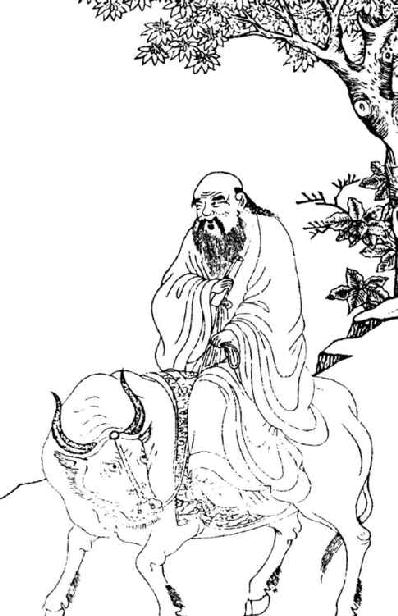
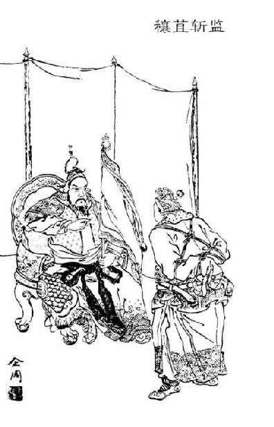
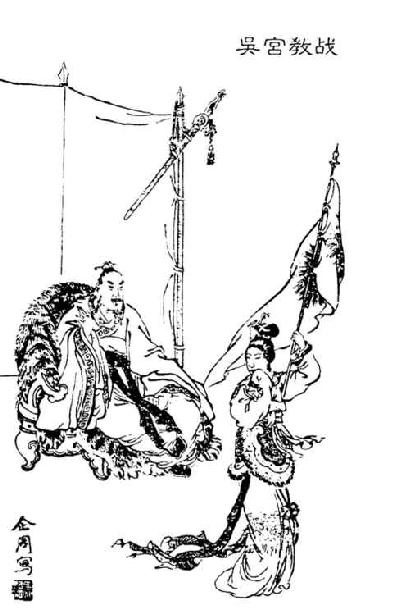
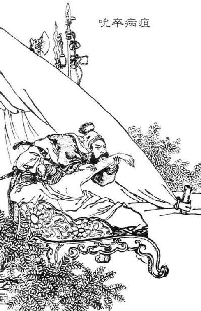
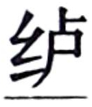

燕土埆【
卷六十 三王世家第三十
“大司马臣去病昧死再拜上疏皇帝陛下：陛下过听【过听：误听，误信。这里用作谦词。】 ，使臣去病待罪行间。宜专边塞之思虑，暴骸中野无以报，乃敢惟他议以干用事者，诚见陛下忧劳天下，哀怜百姓以自忘，亏膳贬乐，损郎员。皇子赖天，能胜衣【胜衣：谓儿童稍长，能穿起成人的衣服。】 趋拜【趋拜：趋走拜谒。指请安、问候的礼节。】 ，至今无号位师傅官。陛下恭让不恤，群臣私望，不敢越职而言。臣窃不胜犬马心，昧死愿陛下诏有司，因盛夏吉时定皇子位。唯陛下幸察【幸察：敬辞。犹言明察。】 。臣去病昧死再拜以闻皇帝陛下。”三月乙亥，御史臣光守尚书令奏未央宫。制曰：“下御史。”
六年三月戊申朔，乙亥，御史臣光守尚书令、丞非，下御史书到，言：“丞相臣青翟、御史大夫臣汤、太常臣充、大行令臣息、太子少傅臣安行宗正事昧死上言：大司马去病上疏曰：‘陛下过听，使臣去病待罪行间。宜专边塞之思虑，暴骸中野无以报，乃敢惟他议以干用事者，诚见陛下忧劳天下，哀怜百姓以自忘，亏膳贬乐，损郎员。皇子赖天，能胜衣趋拜，至今无号位师傅官。陛下恭让不恤，群臣私望，不敢越职而言。臣窃不胜犬马心，昧死愿陛下诏有司，因盛夏吉时定皇子位。唯愿陛下幸察。’制曰‘下御史’。臣谨与中二千石、二千石臣贺等议：古者裂地立国，并建诸侯以承天子，所以尊宗庙重社稷也。今臣去病上疏，不忘其职，因以宣恩，乃道天子卑让自贬以劳天下，虑皇子未有号位。臣青翟、臣汤等宜奉义遵职，愚憧而不逮事。方今盛夏吉时，臣青翟、臣汤等昧死请立皇子臣闳、臣旦、臣胥为诸侯王。昧死请所立国名。”
“大司马霍去病冒死再拜上疏皇帝陛下：陛下误听，让臣霍去病在军中任职。我本来应该一心思虑边防之，即便是暴露骸骨于野外也无法报答陛下，现在我竟然胆敢讨论其他事情来干预执掌政事者，实在是因为看到陛下为天下之事而忧虑操劳，怜悯黎民百姓而唯独忘了自己，减少饮食和音乐，裁减郎官。皇子仰赖上天保佑，已经长大成人，能够行趋拜之礼了，然而至今还没有封号爵位，也没有配备太傅等官员。陛下谦恭礼让，却不体恤自己的骨肉，朝中各位大臣私下都希望早日给皇子确立封号，只是不敢越职进言。我私下不惜犬马之心，冒死上疏进言，希望陛下向主管官员下诏令，趁盛夏吉日早一点确定皇子的封号爵位。只希望陛下明鉴。臣霍去病冒死再拜，向皇帝陛下进言。”三月乙亥日，御史兼尚书令霍光启奏未央宫。孝武帝下令：“将此事交给御史处理。”
孝武帝元狩六年（前117年）三月戊申朔日，乙亥，御史霍光兼尚书令、尚书丞非，下发给御史的诏书说：“丞相庄青翟、御史大夫张汤、太常赵充、大行令李息、太子少傅代理宗正任安冒死进言：大司马霍去病向天子上疏说：‘陛下误听，让臣霍去病在军中任职。我本来应该一心思虑边防之，即便是暴露骸骨于野外也无法报答陛下，现在我竟然胆敢讨论其他事情来干预执掌政事者，实在是因为看到陛下为天下之事而忧虑操劳，怜悯黎民百姓而唯独忘了自己，减少饮食和音乐，裁减郎官。皇子仰赖上天保佑，已经长大成人，能够行趋拜之礼了，然而至今还没有封号爵位，也没有配备太傅等官员。陛下谦恭礼让，却不体恤自己的骨肉，朝中各位大臣私下都希望早日给皇子确立封号，只是不敢越职进言。我私下不惜犬马之心，冒死上疏进言，希望陛下向主管官员下诏令，趁盛夏吉日早一点确定皇子的封号爵位。只希望陛下明鉴。’皇帝下诏书说：‘交付御史办理。’臣慎重地与中二千石、二千石臣公孙贺等人商议：古代分地立国，并且创建诸侯国来尊奉天子，这是为了尊重宗庙、重视社稷。如今臣霍去病上疏，不忘自己的职责，以此来宣扬皇恩，称道当今天子谦让自贬，为天下大事操劳，考虑到皇子还没有封号。臣庄青翟、张汤等人本应遵守职分，但由于愚昧而没有想到此事。眼下正值盛夏吉时，臣庄青翟、张汤等人冒死请求皇上立皇子刘闳、刘旦、刘胥为诸侯王。冒死请求皇上确定封国的名号。”
制曰：“盖闻周封八百，姬姓并列，或子、男、附庸。《礼》‘支子【支子：宗法制度下称嫡长子以下的嫡子和庶子。】 不祭’。云并建诸侯所以重社稷，朕无闻焉。且天非为君生民【非为君生民：出自《左传》：“天生烝民，立君以司牧之。是说生民而立君长司牧之，并不是天为君而生民。”】 也。朕之不德，海内未洽，乃以未教成者强君连城，即股肱何劝？其更议以列侯家之。”
三月丙子，奏未央宫。“丞相臣青翟、御史大夫臣汤昧死言：臣谨与列侯臣婴齐、中二千石二千石臣贺、谏大夫博士臣安等议曰：伏闻周封八百，姬姓并列，奉承天子。康叔以祖考显，而伯禽以周公立，咸为建国诸侯，以相傅为辅。百官奉宪，各遵其职，而国统备矣。窃以为并建诸侯所以重社稷者，四海诸侯各以其职奉贡祭。支子不得奉祭宗祖，礼也。封建使守藩国，帝王所以扶德施化。陛下奉承天统，明开圣绪，尊贤显功，兴灭继绝。续萧文终【萧文终：萧何谥号“文终”，因此称为“萧文终”。】 之后于酂，褒厉群臣平津侯等。昭六亲之序，明天施之属，使诸侯王封君得推私恩分子弟户邑，锡号尊建百有余国。而家皇子为列侯，则尊卑相逾，列位失序，不可以垂统于万世。臣请立臣闳、臣旦、臣胥为诸侯王。”三月丙子，奏未央宫。
孝武帝下达诏书说：“听说周朝分封八百位诸侯，姬姓并列其中，有子爵、男爵、附庸。《礼记》中说‘支子不可以祭祀宗庙’。说什么同时分封各诸侯是为了尊重国家社稷，我从来就没有听说过。况且，上天并不是为了君主而生化万民。我没有优良品德，四海之内还没有安定和睦，在这个时候勉强让没有接受完教育的皇子做诸侯王，担当地方行政官员的君主，到时候左右大臣又如何来对他们加以劝导呢？重新商议此事，赐给他们列侯的爵位。”
三月丙子日，众大臣上奏未央宫。“丞相庄青翟、御史大夫张汤冒死进言：臣等谨慎地与列侯婴齐，中二千石、二千石大臣公孙贺、谏议大夫博士任安等人商议说：我们听说当初周朝分封了八百位诸侯，姬姓并列其中，共同侍奉天子。康叔凭借祖父、父亲而获得显贵地位，伯禽则凭借周公而立国，他们都是拥有封国的诸侯，并以相、傅辅佐自己。百官奉行国家的法令，各自履行自己的职责，这样一来国家的秩序就完备了。我们私下认为，之所以说同时封立诸侯是尊重社稷的做法，是因为四海之内的诸侯各自按照他们的职责向天子献贡。支子不得奉祭祖先，这是礼制规定的。分封土地让诸侯各自守卫藩国，正是帝王用以匡扶道统、实施教化的手段。陛下奉承天道治理天下，将先圣未完成的事业发扬光大，尊重贤者，彰显有功者的功绩，复兴灭亡的封国，延续断绝后代的封国。将萧何的后人续封在酂地，褒奖平津侯公孙弘等群臣。昭示六亲尊卑的次序，阐明上天施恩的范围，从而使王侯封君能够推广私恩将户邑分给所有的子弟，赐予尊号创建了一百多个封国。然而，皇上却将皇子封为列侯，使得尊卑颠倒，名位失去秩序，从而不能留下可供万世遵守的准则。臣等请求立刘闳、刘旦、刘胥为诸侯王。”三月丙子日，他们将奏书上呈到未央宫。
制曰：“康叔亲属有十而独尊者，褒有德也。周公祭天命郊，故鲁有白牡【白牡：古代王侯祭祀用的白色公牛。】 、骍xīng刚【骍刚：祭祀用的赤色公牛。】 之牲。群公不毛，贤不肖差也。‘高山仰之，景行向之’，朕甚慕焉。所以抑未成，家以列侯可。”
四月戊寅，奏未央宫。“丞相臣青翟、御史大夫臣汤昧死言：臣青翟等与列侯、吏二千石、谏大夫、博士臣庆等议：昧死奏请立皇子为诸侯王。制曰：‘康叔亲属有十而独尊者，褒有德也。周公祭天命郊，故鲁有白牡、骍刚之牲。群公不毛【不毛：毛色不纯。】 ，贤不肖差也。“高山仰之，景行向之”，朕甚慕焉。所以抑未成，家以列侯可。’臣青翟、臣汤、博士臣将行等伏闻康叔亲属有十，武王继体，周公辅成王，其八人皆以祖考之尊建为大国。康叔之年幼，周公在三公之位，而伯禽据国于鲁，盖爵命之时，未至成人。康叔后扞【扞：同“捍”，捍卫，抵御。】 禄父之难，伯禽殄淮夷之乱。昔五帝异制，周爵五等，春秋三等，皆因时而序尊卑。高皇帝拨乱世反诸正，昭至德，定海内，封建诸侯，爵位二等【爵位二等：爵位分为两个等级，指王和列侯。】 。皇子或在襁褓而立为诸侯王，奉承天子，为万世法则，不可易。陛下躬亲仁义，体行圣德，表里文武。显慈孝之行，广贤能之路。内褒有德，外讨强暴。极临北海，西溱月氏，匈奴、西域，举国奉师。舆械之费，不赋于民。虚御府之藏以赏元戎【元戎：兵车。这这里借指将士。】 ，开禁仓以振贫穷，减戍卒之半。百蛮之君，靡不向风，承流称意。远方殊俗，重译而朝，泽及方外。故珍兽至，嘉谷兴，天应甚彰。今诸侯支子封至诸侯王，而家皇子为列侯，臣青翟、臣汤等窃伏孰计之，皆以为尊卑失序，使天下失望，不可。臣请立臣闳、臣旦、臣胥为诸侯王。”四月癸未，奏未央宫，留中不下。
孝武帝发布制书说：“康叔的弟兄有十人，可是只有他一个人尊贵，是褒奖有德者的缘故。周公所管辖的鲁国受命在郊外祭天，因此鲁国分别用白毛公牛、赤色公牛来祭祀周公、伯禽。至于其他公侯，则用毛色不纯的牲畜祭祀，这就是贤者与不肖者的差别所在。正所谓‘高尚的道德令人敬仰，光明的品行令人向往’，我对他们十分仰慕。所以，我要抑制学业未成的各位皇子，封他们为列侯就行了。”
四月戊寅日，群臣上奏未央宫。“丞相庄青翟、御史大夫张汤冒死进言：臣庄青翟等人与列侯、二千石的官吏、谏议大夫、博士臣庆等人商议，冒死上奏请求皇上立皇子为诸侯王。皇上所下诏书说：‘康叔的弟兄有十人，可是只有他一个人尊贵，是褒奖有德者的缘故。周公所管辖的鲁国受命在郊外祭天，因此鲁国分别用白毛公牛、赤色公牛来祭祀周公、伯禽。至于其他公侯，则用毛色不纯的牲畜祭祀，这就是贤者与不肖者的差别所在。正所谓“高尚的道德令人敬仰，光明的品行令人向往”，我对他们十分仰慕。所以，我要抑制学业未成的各位皇子，封他们为列侯就行了。’臣庄青翟、张汤、博士臣将行等人听说，康叔有兄弟十人，其中武王继承了王位，周公辅佐少主成王，其余八人都因为祖父和父亲的尊贵而创建大国。康叔在众兄弟中年纪最小，周公高居三公之位，而伯禽被封在鲁国，大概在授予爵位之时尚未成年。后来，康叔能够抵御禄父的叛乱，伯禽能够平定淮夷的叛乱。从前五帝的制度各不相同，周朝的爵位分为五等，到了春秋时代分为三等，都是根据所处时代不同而排列尊卑次序的。高皇帝身处乱世故而拨乱反正，向天下昭示了至高无上的德行，他平定海内，分封诸侯，创建封国，爵位共分为二等。皇子中有的人还在襁褓之中便被封为诸侯王，以供奉天子，作为千秋万代的法则，不可更改。陛下躬行仁义之道，亲自践行圣德，文治武功互为表里，相得益彰。表彰仁慈孝敬的行为，广开贤才晋升的道路。对内褒奖有德之人，对外讨伐强横残暴之人。北边到达北海，西边到达月氏，匈奴、西域，无不举国供奉、效法大汉。车辆武器的费用，从不向平民百姓征收。竭尽国库所藏以奖励将士，敞开宫禁的仓库以赈济贫苦百姓，裁减一半的戍卒。各蛮夷国家的君长，无不向往汉朝的风俗，自愿接受汉朝教化而符合朝廷的旨意。远方那些有着特殊风俗的民族，不辞辗转翻译入京朝拜，皇帝的恩泽遍及域外。因此，珍禽异兽被送来，象征祥瑞的禾苗生长出来，上天的感应非常明显。如今就连诸侯王的庶子也当上了王，而皇子却仅仅被封为列侯。臣庄青翟、张汤等私下里反复议论此事，都认为这是尊卑失序，使天下人失望，所以千万不能这样。臣等请求将刘闳、刘旦、刘胥立为诸侯王。”四月癸未日，这则奏书呈至未央宫，奏章滞留宫中一直没有批示下达。
“丞相臣青翟、太仆臣贺、行御史大夫事太常臣充、太子少傅臣安行宗正事昧死言：臣青翟等前奏大司马臣去病上疏言，皇子未有号位，臣谨与御史大夫臣汤、中二千石、二千石、谏大夫、博士臣庆等昧死请立皇子臣闳等为诸侯王。陛下让文武，躬自切，及皇子未教。群臣之议，儒者称其术，或悖其心。陛下固辞弗许，家皇子为列侯。臣青翟等窃与列侯臣寿成等二十七人议，皆曰以为尊卑失序。高皇帝建天下，为汉太祖，王子孙，广支辅。先帝法则弗改，所以宣至尊也。臣请令史官择吉日，具礼仪上，御史奏舆地图，他皆如前故事。”制曰：“可。”
四月丙申，奏未央宫。“太仆臣贺行御史大夫事昧死言：太常臣充言卜入四月二十八日乙巳，可立诸侯王。臣昧死奏舆地图，请所立国名。礼仪别奏。臣昧死请。”
制曰：“立皇子闳为齐王，旦为燕王，胥为广陵王。”
四月丁酉，奏未央宫。六年四月戊寅朔，癸卯，御史大夫汤下丞相，丞相下中二千石，二千石下郡太守、诸侯相，丞书从事下当用者。如律令。
“丞相庄青翟、太仆公孙贺、代行御史大夫事太常赵充、太子少傅兼宗正事任安冒死进言：臣庄青翟等人先前呈报大司马霍去病的上疏说，皇子没有封号和爵位，臣等恭谨地与御史大夫张汤、中二千石、二千石、谏议大夫、博士臣庆等人冒死请求立皇子刘闳等人为诸侯王。陛下拥有文治武功而不居功自傲，总是恳切地责备自己，说到皇子学业尚未完成。群臣的商议认为，儒家学者表面上宣扬自己的分封学说，可是有的却与内心实际想法相违背。陛下坚决不允许，只封皇子为列侯。臣庄青翟等私下与列侯萧寿成等二十七人议论此事，都认为这样会使尊卑失序。高皇帝创建江山，为汉太祖，封子孙为王，扩展旁支来巩固根基。先帝的法则之所以没有改变，是要用来彰显先帝至尊。臣等请求让史官选择良辰吉日，将礼仪开列出来上报朝廷，让御史呈上地图，其他事宜都依照以前的惯例。”孝武帝下达制书说：“可以。”
四月丙申日，大臣上奏未央宫。“太仆、代理御史大夫公孙贺冒死进言：太常赵充说占卜之后认为四月二十八日乙巳适宜立诸侯王。微臣冒死上呈地图，请陛下为所立的封国确定名号。礼仪之事另行上奏。微臣冒死恳请陛下。”
归有光：“《三王世家》本不阙，读此赞又可见史公亦不及见三王后事。褚少孙浅陋，遂谓求其世家不可得，《序》亦云‘三子之王，文辞可观’。可知独载其文辞也。”
孝武帝下达制书说：“立皇子刘闳为齐王，立刘旦为燕王，立刘胥为广陵王。”
四月丁酉日，大臣上奏未央宫。元狩六年（前117年）四月戊寅朔日，癸卯，御史大夫张汤将此批示下达给丞相，丞相再将此批示下达给中二千石，二千石下达给各郡太守、诸侯国的相，收到诏命以后遵旨行事，下达给有关的办事人员。此事依照法令执行。
“维六年四月乙巳，皇帝使御史大夫汤庙立子闳为齐王。曰：于戏，小子闳，受兹青社！朕承祖考，维稽古建尔国家，封于东土，世为汉藩辅。于戏念哉！恭朕之诏，惟命不于常。人之好德，克明显光。义之不图，俾君子怠。悉尔心，允执其中，天禄永终。厥有愆【愆：错误，过失。】 不臧，乃凶于而国，害于尔躬。于戏，保国艾民，可不敬与！王其戒之。”
右齐王策。
“维六年四月乙巳，皇帝使御史大夫汤庙立子旦为燕王。曰：于戏，小子旦，受兹玄社！朕承祖考，维稽古，建尔国家，封于北土，世为汉藩辅。于戏！荤粥氏【荤粥氏：即匈奴。】 虐老兽心，侵犯寇盗，加以奸巧边萌【边萌：边境的百姓。】 。于戏！朕命将率徂征厥罪，万夫长，千夫长，三十有二君皆来，降期奔师【降期奔师：指偃其旗鼓而来降。期，通“旗”。】 。荤粥徙域，北州以绥。悉尔心，毋作怨，毋俷fèi德，毋乃废备。非教士不得从征。于戏，保国艾民，可不敬与！王其戒之。”
右燕王策。
“维六年四月乙巳，皇帝使御史大夫汤庙立子胥为广陵王。曰：于戏，小子胥，受兹赤社！朕承祖考，维稽古建尔国家，封于南土，世为汉藩辅。古人有言曰：‘大江之南，五湖之间，其人轻心。杨州保疆，三代要服【要服：古代王畿以外按距离分为五服，相距一千五百里至二千里为要服。】 ，不及以政。’于戏！悉尔心，战战兢兢，乃惠乃顺，毋侗【侗：幼稚无知。】 好轶，毋迩ěr宵人，维法维则。《书》云：‘臣不作威，不作福，靡有后羞。’于戏，保国艾民，可不敬与！王其戒之。”
右广陵王策。
“元狩六年（前117年）四月乙巳日，皇帝命御史大夫张汤在太庙将皇子刘闳立为齐王。圣旨上说：呜呼，儿子刘闳，接受这青色的社土！我继承了先祖的事业，依照古代的制度分给你国土，封在东方，世代作为辅佐汉朝的藩臣。呜呼，你一定要对此念念不忘啊！恭恭敬敬地接受我的诏命吧，要知道天命并非固定不变的。人只有爱好德行，才能彰显光明。如果不追求道义，就会令辅臣懈怠。用尽你的心智，真诚地把握中正的道路，这样就会永保天禄。假如你有罪过，不行善事，就会给你的国家带来灾难，给你自身带来祸害。呜呼，保卫国家治理百姓，岂能不恭敬而谨慎！齐王，你要对此提高警惕。”
以上就是分封齐王刘闳的策文。
“元狩六年（前117年）四月乙巳日，皇帝命御史大夫张汤在太庙将皇子刘旦立为燕王。圣旨上说：呜呼，儿子刘旦，接受这黑色的社土！我继承了先祖的事业，依照古代的制度分给你国土，封在北方，世代作为辅佐汉朝的藩臣。呜呼！荤粥氏虐待老人，怀着禽兽之心，侵犯抢掠，加以欺诈边民。呜呼！我命令将军前去讨伐他们的罪行，万夫长，千夫长，三十二位君长都前来归顺，他们降下旗帜，军队逃散。荤粥氏迁到别处，汉朝北方的州郡由此得到安定。用尽你的心智，不要制造仇怨，不要使道德败坏，不要荒废武备。没有经过教育、训练的人不得征召入伍。呜呼，保卫国家治理百姓，岂能不恭敬而谨慎！燕王，你要对此提高警惕。”
以上就是分封燕王刘旦的策文。
“元狩六年（前117年）四月乙巳日，皇帝命御史大夫张汤在太庙将皇子刘胥立为广陵王。圣旨上说：呜呼，儿子刘胥，接受这赤色的社土！我继承了先祖的事业，依照古代的制度分给你国土，封在南方，世代作为辅佐汉朝的藩臣。古人曾经说过：‘在大江以南，五湖之间，那个地方人心轻浮。扬州是保护中原的边疆地区，夏、商、周三代时期，那里是王畿的外围之地，政教不能传播到那里。’呜呼！用尽你的心智，处处小心谨慎，对百姓要施以恩惠，这样他们才会顺从于你，不要幼稚无知，不要放荡淫逸，不要亲近小人，一切都要依照法令行事。《尚书》中说：‘大臣对百姓不作威作福，日后就不会遭到羞辱。’呜呼，保卫国家治理百姓，岂能不恭敬谨慎！广陵王，你要对此提高警惕。”
以上就是分封广陵王刘胥的策文。
太史公曰：古人有言曰“爱之欲其富，亲之欲其贵”。故王者壃jiāng土建国，封立子弟，所以褒亲亲，序骨肉，尊先祖，贵支体，广同姓于天下也。是以形势强而王室安。自古至今，所由来久矣。非有异也，故弗论箸也。燕齐之事，无足采者。然封立三王，天子恭让，群臣守义，文辞烂然，甚可观也，是以附之世家。
太史公说：古人曾经说过“爱他就想使他变得富有，亲近他就想使他变得尊贵”。因此帝王划分土地创建封国，封立子弟为王侯，用以褒奖亲族，使骨肉亲疏有序，尊重祖先，使兄弟子孙身份显贵，使同姓宗族遍布天下。这样一来，国势便强大起来，王室也得以安宁。从古至今，这条规律由来已久。这并没有特殊之处，因此没必要加以论述。燕王和齐王的事迹，没有值得采录的。但是封立三王，天子谦恭礼让，群臣守持道义，文辞华美，甚为可观，因此附在世家之中。
褚先生曰：臣幸得以文学为侍郎，好览观太史公之列传。传中称《三王世家》文辞可观，求其世家终不能得。窃从长老好故事者取其封策书，编列其事而传之，令后世得观贤主之指意。
盖闻孝武帝之时，同日而俱拜三子为王：封一子于齐，一子于广陵，一子于燕。各因子才力智能，及土地之刚柔，人民之轻重，为作策以申戒之。谓王：“世为汉藩辅，保国治民，可不敬与！王其戒之。”夫贤主所作，固非浅闻者所能知，非博闻强记君子者所不能究竟其意。至其次序分绝，文字之上下，简之参差长短，皆有意，人莫之能知。谨论次其真草诏书，编于左方。令览者自通其意而解说之。
褚先生说：我有幸能够凭借文学才能成为侍郎，我非常喜欢阅读太史公所写的列传。在传中称赞《三王世家》文辞甚为可观，但是四处寻觅这篇文章却始终没有找到。我私下里从喜好旧事的长老那里得到了三王的封策书，然后将这些事迹编写出来传给后人，让后世得以看到贤明君主的旨意。
听说孝武帝在位之时，曾在同一天里封三位皇子为王：将一个皇子封在齐国，一个皇子封在广陵，一个皇子封在燕国。孝武帝根据每个皇子的能力以及土地的肥沃与贫瘠，以及百姓的轻浮与庄重等情况，为他们作策文加以告诫。孝武帝对三王说：“世代作为辅佐汉朝的藩臣，保卫国家治理百姓，岂能不恭敬谨慎！诸王，你们要对此提高警惕。”贤明君主所写的策文，本来就不是孤陋寡闻者可以理解的，不是学识渊博的君子根本就不能理解其深邃的含义。至于上述策文的次序、分段，文字的前后斟酌，以及书简的参差长短，都有其独特用意，是别人所不知道的。我谨论定孝武皇帝的真草诏书，编列在下面，使阅读者自己研究它的含义从而进行解释。
王夫人者，赵人也，与卫夫人并幸武帝，而生子闳。闳且立为王时，其母病，武帝自临问之。曰：“子当为王，欲安所置之？”王夫人曰：“陛下在，妾又何等可言者？”帝曰：“虽然，意所欲，欲于何所王之？”王夫人曰：“愿置之雒阳。”武帝曰：“雒阳有武库敖仓【敖仓：古代重要粮仓，秦设置，在今河南省荥阳市东北敖山。后泛指粮仓。】 ，天下冲厄，汉国之大都也。先帝以来，无子王于雒阳者。去雒阳，余尽可。”王夫人不应。武帝曰：“关东之国无大于齐者。齐东负海而城郭大，古时独临菑中十万户，天下膏腴地莫盛于齐者矣。”王夫人以手击头，谢曰：“幸甚。”王夫人死而帝痛之，使使者拜之曰：“皇帝谨使使太中大夫明奉璧一，赐夫人为齐王太后。”子闳王齐，年少，无有子，立，不幸早死，国绝，为郡。天下称齐不宜王云。
所谓“受此土”者，诸侯王始封者必受土于天子之社，归立之以为国社，以岁时祠之。《春秋大传》曰：“天子之国有泰社【泰社：古代天子的宗社。】 。东方青，南方赤，西方白，北方黑，上方黄。”故将封于东方者取青土，封于南方者取赤土，封于西方者取白土，封于北方者取黑土，封于上方者取黄土。各取其色物，裹以白茅，封以为社。此始受封于天子者也。此之为主土。主土者，立社而奉之也。“朕承祖考”，祖者先也，考者父也。“维稽古”，维者度也，念也，稽者当也，当顺古之道也。
王夫人本是赵国人，她与卫夫人都深受武帝宠爱，并且生下了儿子刘闳。刘闳即将立为诸侯王的时候，他的母亲生病，武帝便亲自去问她。说：“儿子刘闳应当封为诸侯王，你希望把他封在什么地方？”王夫人说：“有陛下在，臣妾又有什么可说的呢？”武帝说：“尽管如此，但现在只根据你的想法来说，打算把他封在哪里做王呢？”王夫人说：“我希望把他封在雒阳。”武帝说：“雒阳有储藏武器的仓库和粮仓，是天下的要冲，也是汉朝的大都城。自从先帝以来，就没有皇子在这里封王。除去雒阳，别的地方都可以。”可是王夫人没有应声。武帝说：“关东地区的封国再没有比齐国更大的。齐国东部临海，而且城市很大，古时候仅临菑城就有十万户人口，天下肥沃富饶的土地再没有比齐国更多的了。”王夫人听了以后用手击头，感谢说：“太好了。”后来王夫人去世，武帝十分哀痛，派使者祭拜她说：“皇帝谨命太中大夫明奉上璧玉一块，赐夫人为齐王太后。”皇子刘闳被封为齐王的时候，年纪还小，也没有儿子，立为齐王之后，他又不幸早亡，于是封国被废除，改设为朝廷下属的一个郡。天下人都说齐国这个地方不适宜封王。
策书中所谓“受此土”的意思是，诸侯王开始接受皇帝分封的时候，一定要在天子的泰社里接受一块土，回到封国以后用这块土创建自己的国社，每年还要按时祭祀它。《春秋大传》中说：“天子的国家拥有泰社。东方为青色土，南方为赤色土，西方为白色土，北方为黑色土，正中央为黄色土。”因此，即将封在东方的诸侯王取青色土，封在南方的诸侯王取赤色土，封在西方的诸侯王取白色土，封在北方的诸侯王取黑色土，封在中央的诸侯王取黄色土。诸侯王各自取属于自己颜色的土，然后用白茅草包起来，回国以后封好建成国社。这就是最初被天子分封的诸侯王。这种土就叫作主土。对于主土，应当创建社坛祭祀。所谓“朕承祖考”，“祖”就是祖先，“考”就是先父。所谓“维稽古”，“维”就是忖度、思虑，“稽”就是应当，也就是说应当顺从古代的制度。
齐地多变诈，不习于礼义，故戒之曰：“恭朕之诏，唯命不可为常。人之好德，能明显光。不图于义，使君子怠慢。悉若心，信执其中，天禄长终。有过不善，乃凶于而国，而害于若身。”齐王之国，左右维持以礼义，不幸中年早夭。然全身无过，如其策意。
传曰“青采出于蓝，而质青于蓝”者，教使然也。远哉贤主，昭然独见：诫齐王以慎内；诫燕王以无作怨，无俷德【俷德：背德。】 ；诫广陵王以慎外，无作威与福。
夫广陵在吴越之地，其民精而轻，故诫之曰“江湖之间，其人轻心。杨州葆疆，三代之时，迫要使从中国俗服，不大及以政教，以意御之而已。无侗好佚，无迩宵人，维法是则。无长好佚乐驰骋弋猎【弋猎：射猎，狩猎。】 淫康，而近小人。常念法度，则无羞辱矣”。三江、五湖有鱼盐之利，铜山之富，天下所仰。故诫之曰“臣不作福”者，勿使行财币，厚赏赐，以立声誉，为四方所归也。又曰“臣不作威”者，勿使因轻以倍义也。
会孝武帝崩，孝昭帝初立，先朝广陵王胥，厚赏赐金钱财币，直三千余万，益地百里，邑万户。
齐地百姓大多善变而狡诈，不讲究礼仪，因此皇帝告诫齐王说：“恭恭敬敬地接受我的诏命吧，要知道天命并非固定不变的。人只有爱好德行，才能彰显光明。不追求道义，就会令辅臣懈怠。用尽你的心智，真诚地把握中正的道路，这样就会永保天禄。假如有罪过，不行善事，就会给你的国家带来灾难，给你自身带来祸害。”齐王到达自己的封国以后，左右大臣都能依据礼义来处理朝政，不幸的是齐王中年早逝。不过，齐王一生没有犯下过错，正如策文里要求的那样。
古书中所谓的“青色是从蓝草中提取出来的，但是其颜色要比蓝草更青”，指的是教化使它变成这样。贤明的君主真是有远见啊，只有他能够看得如此透彻：告诫齐王对内谨慎；告诫燕王不要制造仇怨，不要使道德败坏；告诫广陵王对外谨慎，不可作威作福。
广陵王的封国位于吴越地区，那里的人民精明而又轻浮，因此皇帝告诫广陵王说“江湖地区人心轻浮。扬州是保护中原的边疆地区，夏、商、周三代时期，朝廷迫使他们接受中原习俗服饰，但是政教没有在那里普及，只能大体上按照心意控制罢了。不要蒙昧无知，不要放荡淫逸，不要与小人亲近，一切都要依照法令行事。千万不要总是纵情游乐，骑马打猎，过度享乐，从而接近小人。时刻想到法度，就不会有日后的羞辱”。三江、五湖一带有渔业、盐业的收益，又有铜山的财富，是天下人向往的地方。因此皇帝告诫广陵王说“臣不作福”，就是说不要滥用钱财、过度地赏赐，以此来为自己树立声誉，使四面八方的人前来归附。皇帝还说“臣不作威”，就是说不要因为当地人轻浮而背弃道义。
适逢孝武帝去世，孝昭帝刚刚继承皇位之际，首先召广陵王刘胥入朝，赏赐给他丰厚的财物，价值三千多万，还为他增加了土地一百里、食邑一万户。
会昭帝崩，宣帝初立，缘恩行义，以本始元年中，裂汉地，尽以封广陵王胥四子：一子为朝阳侯；一子为平曲侯；一子为南利侯；最爱少子弘，立以为高密王。
其后胥果作威福，通楚王使者。楚王宣言曰：“我先元王，高帝少弟也，封三十二城。今地邑益少，我欲与广陵王共发兵云。立广陵王为上，我复王楚三十二城，如元王时。”事发觉，公卿有司请行罚诛。天子以骨肉之故，不忍致法于胥，下诏书无治广陵王，独诛首恶楚王。传曰“蓬生麻中，不扶自直；白沙在泥中，与之皆黑”者，土地教化使之然也。其后胥复祝诅谋反，自杀，国除。
燕土
适逢昭帝去世，宣帝刚刚即位之时，由于骨肉恩情的缘故而施行道义，在本始元年（前73年），昭帝割出汉朝的辖地，用以分封广陵王刘胥的四个儿子：一个儿子被封为朝阳侯；一个儿子被封为平曲侯；一个儿子被封为南利侯；最受喜爱的小儿子刘弘，被立为高密王。
后来刘胥果然在封国作威作福，还派使臣与楚王勾结。楚王宣称：“我的祖先元王，是高祖皇帝的小弟弟，封地有三十二座城。如今，封地的城邑越来越少，因此我要与广陵王一道发兵。拥立广陵王为帝，自己则要恢复楚国原来的三十二座城，就像当初元王在位时那样。”后来此事被朝廷发现，朝中的公卿及主管官员都请求将其诛杀。天子由于骨肉之情的缘故，不忍心将刘胥绳之以法，于是下诏不要处治广陵王，只将首恶楚王诛杀。古书中所谓“蓬草生长在麻丛之中，不必扶正而自然挺直；白沙混在污泥之中，就会像污泥一样黑”，就是说环境影响使它们变成这样。后来刘胥又祈祷鬼神降下灾祸并谋反，结果事发而自杀身亡，其封国也因此被废除。
燕国土地比较贫瘠，北面靠近匈奴，匈奴人勇敢而缺少谋略，因此皇帝告诫燕王说：“荤粥氏虐待老人，怀着禽兽之心，盗窃抢掠侵犯边民。我命将军前去讨伐他们的罪行，万夫长，千夫长，三十二位君长都前来归顺，他们降下旗帜，军队逃散。荤粥氏迁到别处，汉朝北方的州郡由此得到安定。”“悉若心，无作怨”，就是告诫燕王刘旦不要顺从当地的风俗并与人结下仇怨。“无俷德”，就是告诫燕王不要背弃良好的德行。“无废备”，就是告诫燕王不可以荒废武装戒备，应当时刻防备匈奴入侵。“非教士不得从征”，就是说那些不研习礼义的人，不可召在身边任用。
会武帝年老长，而太子不幸薨，未有所立，而旦使来上书，请身入宿卫于长安。孝武见其书，击地，怒曰：“生子当置之齐鲁礼义之乡，乃置之燕赵，果有争心，不让之端见矣。”于是使使即斩其使者于阙下。
会武帝崩，昭帝初立，旦果作怨而望大臣。自以长子当立，与齐王子刘泽等谋为叛逆，出言曰：“我安得弟在者！今立者乃大将军子也。”欲发兵。事发觉，当诛。昭帝缘恩宽忍，抑案不扬。公卿使大臣请，遣宗正与太中大夫公户满意、御史二人，偕往使燕，风喻【风喻：以委婉的辞令劝告。】 之。到燕，各异日，更见责王。宗正者，主宗室诸刘属籍，先见王，为列陈道昭帝实武帝子状。侍御史乃复见王，责之以正法，问：“王欲发兵罪名明白，当坐之。汉家有正法，王犯纤介小罪过，即行法直断耳，安能宽王。”惊动以文法。王意益下，心恐。公户满意习于经术，最后见王，称引古今通义，国家大礼，文章尔雅【尔雅：近于雅正。】 。谓王曰：“古者天子必内有异姓大夫，所以正骨肉也；外有同姓大夫，所以正异族也。周公辅成王，诛其两弟，故治。武帝在时，尚能宽王。今昭帝始立，年幼，富于春秋，未临政，委任大臣。古者诛罚不阿亲戚，故天下治。方今大臣辅政，奉法直行，无敢所阿，恐不能宽王。王可自谨，无自令身死国灭，为天下笑。”于是燕王旦乃恐惧服罪，叩头谢过。大臣欲和合骨肉，难伤之以法。
其后旦复与左将军上官桀等谋反，宣言曰“我次太子，太子不在，我当立，大臣共抑我”云云。大将军光辅政，与公卿大臣议曰：“燕王旦不改过悔正，行恶不变。”于是修法直断，行罚诛。旦自杀，国除，如其策指。有司请诛旦妻子。孝昭以骨肉之亲，不忍致法，宽赦旦妻子，免为庶人。传曰“兰根与白芷，渐之滫xiǔ【滫：泔水，已酸臭的淘米水。】 中，君子不近，庶人不服”者，所以渐然也。
宣帝初立，推恩宣德，以本始元年中尽复封燕王旦两子：一子为安定侯；立燕故太子建为广阳王，以奉燕王祭祀。
适逢武帝年迈，太子又不幸早逝，新太子还没有确立，燕王刘旦派遣使者前来上书，请求到京城长安担任宫廷的宿卫。孝武帝看到他所上之书后，摔到地上，生气地说：“生了儿子本来应该把他放在齐鲁礼义之乡，可实际上却把他放在燕赵之地，他果然有争夺权力的野心，不谦恭退让的端倪已经显现出来了。”于是，孝武帝派人立即将燕王派来的使者在宫阙下处死。
适逢武帝去世，昭帝刚刚即位，刘旦果然产生怨恨并且责怪大臣。刘旦自以为年长应该立为皇帝，于是和齐王的儿子刘泽等人共同谋划叛乱，并扬言说：“我哪里有什么弟弟存在！如今做皇帝的是大将军之子。”他想要发兵。可是事情被朝廷发觉，依法应当被处死。昭帝念在骨肉亲情的份上予以宽恕，把这起案子压了下来，没有张扬。公卿派大臣请求皇帝处理此事，于是朝廷派遣宗正和太中大夫公户满意、两位御史，一同出使燕国，规劝燕王刘旦。到达燕国之后，几位汉使各自在不同的时间，依次与燕王会面并对他加以责问。宗正，是负责管理刘氏宗族户籍的官员，他最先面见燕王，向他列举大量事实说明昭帝确实是武帝之子。侍御史又去会见燕王，用汉朝的法律责备他，问道：“大王准备起兵造反，罪证十分明显，按律应当治罪。汉朝有严明的法律，诸侯王哪怕只犯下微小的过错，也要依法处置，又怎么能够宽恕大王。”侍御史用汉朝法律使燕王内心恐惧震动。于是燕王情绪逐渐低落，心里很恐惧。公户满意精通儒家经术，他最后一个会见燕王，引述古今通行的道义以及国家大礼，言辞文雅而端正。他对燕王说：“在古时候，天子一定要在朝廷内部设置异姓大夫，用来扶正皇子皇孙；在朝廷之外则要设置同姓大夫，用以扶正异姓诸侯。当初周公辅佐成王，杀了他的两个弟弟，所以天下太平。过去武帝在位的时候，还可以宽恕大王。如今昭帝刚刚即位，年纪还小，来日方长，还不能亲自执政，于是委任大臣处理政务。古代君主在诛杀惩罚有罪之人的时候不袒护自己的亲戚，因此天下太平。如今大臣辅政，遵循法律率直行事，不敢偏袒任何人，恐怕不会宽恕大王。大王自己应当谨慎，千万不要让自己身死国灭，令世人耻笑啊。”于是燕王刘旦恐惧认罪，连忙叩头谢过。朝中大臣想让刘旦与昭帝骨肉和好，因此不忍心用国家的法律惩罚他。
后来，刘旦又与左将军上官桀等人谋划造反，宣称“我的年龄仅次于太子，现在太子不在了，应该由我继承皇位，可是大臣们共同压制我”等等。当时大将军霍光辅政，他与公卿大臣们商议说：“燕王刘旦没有悔过自新，依然像以前一样作恶多端。”于是他按照汉朝法律直接处理此事，即行诛杀。刘旦自杀，其封国被废除，正如策文中所指出的那样。主管官员请求将刘旦的妻子儿女一并处死。孝昭帝念在骨肉至亲的份上，不忍心诛杀他们，于是宽恕了刘旦的妻子儿女，将她们贬为庶人。古书中说“兰根与白芷，如果把它们泡在臭水中，君子就不会再接近它们，平民也不会再佩带它们”，是环境使它们逐渐变成这样的。
宣帝刚刚即位，便广施恩德，在本始元年又将燕王刘旦的两个儿子全部分封：一个被封为安定侯；而刘旦的原太子刘建则被封为广阳王，由他来供奉燕王的祭祀。
卷六十一 伯夷列传第一
方孝孺：“伯夷苟知父志欲立齐，当效太伯顺父之志，隐然退避于治命之日，不当显然辞让于乱命之余也。叔齐亦不立而逃之，幸有仲子以托国，不然其如社稷何？斯皆过乎中者也！故孔子但曰‘古之贤人’，而至德之称独在太伯，厥旨深矣。”
夫学者载籍极博，犹考信于六艺。《诗》《书》虽缺，然虞夏之文可知也。尧将逊位，让于虞舜，舜禹之间，岳牧咸荐，乃试之于位，典职【典职：掌管政事。】 数十年，功用既兴，然后授政。示天下重器，王者大统，传天下若斯之难也。而说者曰尧让天下于许由，许由不受，耻之逃隐。及夏之时，有卞随、务光者。此何以称焉？太史公曰：余登箕山，其上盖有许由冢云。孔子序列古之仁圣贤人，如吴太伯、伯夷之伦详矣。余以所闻由、光义至高，其文辞不少概见，何哉？
孔子曰：“伯夷、叔齐，不念旧恶，怨是用希【希：同“稀”。】 。”“求仁得仁，又何怨乎？”余悲伯夷之意，睹轶诗【轶诗：指《采薇》。】 可异焉。其传曰：
学者们记事的典籍尽管极为广博，然而还是要在六经中寻找根据。《诗经》《尚书》虽然残缺不全，但是记载虞、夏两个朝代的文字，依然可以得见。尧帝快要退位时，将帝位让给了虞舜，舜把帝位让给大禹的时候，四方的诸侯和州牧全都赶来推荐他们，于是让他们代理职位，主持了几十年国政之后，有了很大的功绩，这才正式把政权授给他。这说明，天下是最重要的宝器，王位是最重要的统绪，天下的传承就是如此艰难。但有人说尧帝曾经把天下禅让给许由，但是许由没有接受，还把那当成一种耻辱而逃避、隐居。到夏朝时，有卞随、务光这样的人。这些人应该从哪方面来称颂呢？太史公说：我登上箕山，有人说山上有许由的坟墓。孔子依次排列古代那些仁人、圣人、贤人，比如吴太伯、伯夷等人，说得都很详细。我认为我所听说的许由、务光等人的气节很高，但是书籍却一点简略的记载都没有，什么原因呢？
孔子说：“伯夷、叔齐，不会记着别人以往的恶处，对人的怨恨因此也就变得很少。”“追求仁德就能够得到仁德，又有什么可怨恨的呢？”我对伯夷的心意感到悲伤，看到他们遗留下来的逸诗后又觉得非常惊异。他们的传记是这样写的：
伯夷、叔齐，孤竹君之二子也。父欲立叔齐，及父卒，叔齐让伯夷。伯夷曰：“父命也。”遂逃去。叔齐亦不肯立而逃之。国人立其中子。于是伯夷、叔齐闻西伯昌善养老，盍【盍：何不。表示反问或疑问语气。】 往归焉。及至，西伯卒，武王载木主【木主：木制的神主牌位。】 ，号为文王，东伐纣。伯夷、叔齐叩马而谏【叩马而谏：勒住马头进行规劝。后比喻竭力进行劝谏。】 曰：“父死不葬，爰及干戈，可谓孝乎？以臣弑君，可谓仁乎？”左右欲兵之。太公曰：“此义人也。”扶而去之。武王已平殷乱，天下宗周，而伯夷、叔齐耻之，义不食周粟，隐于首阳山，采薇而食之。及饿且死，作歌。其辞曰：“登彼西山兮，采其薇矣。以暴易暴兮，不知其非矣。神农、虞、夏忽焉没兮，我安适归矣？于嗟徂cú【徂：同“殂”，死亡。】 兮，命之衰矣！”遂饿死于首阳山。
由此观之，怨邪非邪？
伯夷、叔齐，他们是孤竹国国君的两个儿子。父亲想要让叔齐做国君的继承人，等到父亲死去以后，叔齐把王位让给伯夷。伯夷说：“这是父亲的命令。”于是伯夷就逃走了。叔齐也因为不肯继承国君之位而逃走。都城中的人们把孤竹君中间的儿子立为国君。在这种情况下，伯夷、叔齐听说西伯昌能够很好地奉养老人，就想：何不去归附他呢？等到他们到达那里的时候，西伯侯已经死去了。周武王用车载着神主，尊号为周文王，向东方行进讨伐商纣王。伯夷、叔齐拉住武王的马，向他进谏：“父亲去世，还没有安葬就发动战争，这能说是孝道吗？身为臣子，却要弑杀国君，这能说是仁义吗？”周武王左右的人想要杀死他们。姜太公说道：“这是忠义的人。”就扶着他们离开了。等到周武王平定了殷商的暴乱，天下人都归附周朝，以周朝为宗，只有伯夷、叔齐觉得这是一种耻辱，出于对商朝的忠义而不吃周朝的粟米粮食，隐居在首阳山，采集蕨菜充饥。等到他们饿得将要死掉时，便创作了一首诗歌。那诗歌中唱道：“爬上那座西山啊，采集那儿的野菜。以暴力手段取代残暴的统治啊，却不知道这样做是错误的。神农氏、虞舜、夏禹那样清明太平的时代很快就消失了，我最后的归宿在何处呢？可叹啊，唉，还是死了吧，我的命运是那样的不济呀！”于是，两人饿死在了首阳山。
陈仁锡：“子长写夷齐之怨，乃所以自写其怨，寓意颇深。孔子以夷齐无怨，而太史公作传，通篇是怨。然孔子所云无怨者兄弟逊国，而太史公所云怨者以暴易暴，之间原不相乖。”“颇似论，不似传，是太史公极得意之文，亦极变体之文。”“疑有疑无，作史慎重，彷徨追赏，言外高奇，读者自知之。”凌稚隆：“尧让许由，盖庄周寓言，眇天下为不足道耳。太史公言有许由冢，乃明其实有是人，而又曰‘文辞不少慨见’，则无尧让之事，已隐然言外矣。”
从这首诗的歌词来看，他们到底有没有怨恨呢？
或曰：“天道无亲，常与善人。”若伯夷、叔齐，可谓善人者非邪？积仁洁行如此而饿死！且七十子之徒，仲尼独荐颜渊为好学。然回也屡空【屡空：经常空乏，一无所有。借指贫穷困乏。】 ，糟糠不厌【厌：饱。】 ，而卒蚤夭。天之报施善人，其何如哉？盗跖日杀不辜，肝人之肉，暴戾恣睢，聚党数千人横行天下，竟以寿终。是遵何德哉？此其尤大彰明较著者也。若至近世，操行不轨，专犯忌讳，而终身逸乐，富厚累世不绝。或择地而蹈之【择地而蹈之：指不仕暗君，不饮盗泉，隐于世外。】 ，时然后出言，行不由径，非公正不发愤，而遇祸灾者，不可胜数也。余甚惑焉，傥所谓天道，是邪非邪？
子曰“道不同不相为谋”，亦各从其志也。故曰“富贵如可求，虽执鞭之士，吾亦为之。如不可求，从吾所好”。“岁寒，然后知松柏之后凋diāo”。举世混浊，清士乃见。岂以其重若彼，其轻若此哉？“君子疾没世而名不称焉”。贾子曰：“贪夫徇财，烈士徇名，夸者死权，众庶冯生【冯生：贪生。冯，同“凭”，恃。】 。”“同明相照，同类相求。”“云从龙，风从虎，圣人作而万物睹。”伯夷、叔齐虽贤，得夫子而名益彰。颜渊虽笃学，附骥尾而行益显。岩穴之士，趣【趣：同“趋”，指出仕。】 舍有时若此，类名堙yīn灭而不称，悲夫！闾巷之人，欲砥行立名者，非附青云之士，恶能施于后世哉？
有人曾经说过：“天意是不会偏私任何人的，只是经常帮助那些好人。”就如同伯夷、叔齐那样的人，他们可以说是善良的人吗？他们不是善良的人吗？他们积累仁德，使自己的品行变得高洁，即使这样，最终还是饿死了！况且孔子那七十个著名的弟子中，孔子唯独称赞颜回是个喜好学习的人。可是颜回却经常平穷困顿，就算是最粗糙食物都无法吃饱，最终还是早早地死去了。上天对善良的人的报答和施与，究竟是什么样子的呢？盗跖每天都会杀死无辜的人，吃掉人身上的肉，残忍暴戾放纵凶狠，纠集了同党好几千人，在天下横行，没有忌惮，竟然能够安享自然的寿命，没有早死。这又是依照什么德行来报答和施与呢？这两个例子是尤其明显重要的。说到近代，那些操守品行不够端正，专门触犯法令的人，反而可以一辈子享受安逸和快乐，他们得到的富贵非常丰厚，代代相传，从不断绝。有人居住都要挑选地方，在该说话的时候才说话，走路不走小路，不是公平正义的事情，就不发奋去做，最终反而遭遇灾祸，这样的例子数都无法数完。我对此感到十分疑惑，倘若这就是人们所说的天道，这到底是正确的还是错误的呢？
孔子曾经说“走着不同道路的人，不能在一起谋划事情”，那么也只有各人遵从各人的意志了。所以说“富有和高贵的生活假如可以求得，那么即使让我做个赶车的人，我也去做。假如无法求得，就遵从我的喜好去做”。“一年中寒冷的季节来到，这之后才明白松柏是所有植物中最后凋谢的”。整个世界都变得混浊了，那些清廉高洁的人士才会出现。这难道不是由于有的人过于重视富贵，才显得轻视富贵的人如此高尚吗？“君子最大的遗憾是离开了这个世界但却没有美好的名声受人称道”。贾子说：“贪婪的人为了财物而死，英烈的人为了名声而死，贪权势而矜夸的人为了权势而死，普通百姓只顾自己的生命。”“同为明亮的东西，就会互相照映；都是同一类的事物，就会相互间产生影响。”“龙出现时，一定有云彩跟随在后，勐虎怒吼时，也一定会刮起大风，当圣人出现在世间时，天下万物都会变得显著起来而易于理解。”伯夷、叔齐虽然也是贤明的人，但也要有孔子的称赞才使他们的名声更加显著。颜回虽然刻苦好学，因为跟随夫子，才使他的德行更加彰明。居住在山林洞穴的隐士，有的名声显达，有的则默默无闻，这都与时机有很大的关系，这样的人如果名声被湮没而没有得到称颂，真可以说是一件悲哀的事情啊！居住在乡里的人，要想磨砺自己的德行、树立美好的名声，假如不是依附于那些青云之上的人士身后，怎么可以让自己的声名广泛地流传于后世呢？
卷六十二 管晏列传第二
陈仁锡：“管仲实赖鲍叔之荐，而晏子能荐贤，此连意全在空处也。先看其简处，次玩其简逸处。”
管仲夷吾者，颍上人也。少时常与鲍叔牙游，鲍叔知其贤。管仲贫困，常欺鲍叔，鲍叔终善遇之，不以为言。已而鲍叔事齐公子小白，管仲事公子纠。及小白立，为桓公，公子纠死，管仲囚焉。鲍叔遂进管仲。管仲既用，任政于齐，齐桓公以霸，九合诸侯，一匡天下，管仲之谋也。
管仲曰：“吾始困时，尝与鲍叔贾【贾：经商。】 ，分财利多自与，鲍叔不以我为贪，知我贫也。吾尝为鲍叔谋事而更穷困，鲍叔不以我为愚，知时有利不利也。吾尝三仕三见逐于君，鲍叔不以我为不肖，知我不遭时也。吾尝三战三走，鲍叔不以我怯，知我有老母也。公子纠败，召忽死之，吾幽囚受辱，鲍叔不以我为无耻，知我不羞小节而耻功名不显于天下也。生我者父母，知我者鲍子也。”
鲍叔既进管仲，以身下之。子孙世禄于齐，有封邑者十余世，常为名大夫。天下不多管仲之贤而多鲍叔能知人也。
管仲的名字叫夷吾，是颍上人。年轻的时候，他经常与鲍叔牙交游往来，鲍叔牙知道他是个很贤能的人。管仲家里很穷，经常骗取鲍叔牙的财物，但是鲍叔牙始终都对管仲很好，从未因此而产生怨言。不久，鲍叔牙侍奉齐国的公子小白，而管仲则侍奉另一位公子纠。等到小白成为齐国国君，也就是齐桓公时，公子纠被杀死，管仲也被囚禁起来了。鲍叔牙于是向齐桓公推荐管仲。管仲被任用之后，在齐国主持国政，齐桓公因此成为霸主，九次召集诸侯，使天下复归于正，这些都是靠管仲的谋略才实现的。
管仲说：“我当初贫穷的时候，曾经跟鲍叔牙一起合伙做买卖，到了分钱的时候，我经常多分给自己，鲍叔牙不认为我贪财，他知道我是因为家里贫穷才这么做的。我曾经为鲍叔牙出谋划策，却让他陷入了更加困窘的境地，鲍叔牙不认为我太过愚蠢，因为他知道时机有顺利的时候，也有不顺利的时候。我多次出仕辅佐国君，多次被国君罢黜驱逐，鲍叔牙不觉得我没有才能，他知道我还没有遇到好的机会。我曾经多次在打仗的时候逃走，鲍叔牙不觉得我是个怯懦的人，因为他知道我有年老的母亲需要照顾。公子纠在抢夺国君之位的斗争中失败，召忽为他而死，我被囚禁起来遭受羞辱，鲍叔牙不认为我是一个不知廉耻的人，因为他知道我不以小节为耻，而以功名不显扬于天下为耻。生下我的人是我的父母，但最了解我的人却是鲍叔牙。”
鲍叔牙推荐管仲做了国相之后，自己甘愿在他手下做事。他的子孙世世代代都拿着齐国的俸禄，得到封地的后代有十几代人，其中很多都是有名的大夫。天下的人不称赞管仲的贤能，都称赞鲍叔牙是一个能够识别人才的人。
管仲既任政相齐，以区区之齐在海滨，通货积财，富国强兵，与俗同好恶。故其称曰：“仓廪lǐn实而知礼节，衣食足而知荣辱，上【上：居于上位的人，指君主或尊长。】 服度【服度：遵守法度。】 则六亲【六亲：指父、母、兄、弟、妻、子。】 固。四维【四维：礼、义、廉、耻。维，纲纪。】 不张，国乃灭亡。下令如流水之原，令顺民心。”故论卑而易行。俗之所欲，因而予之；俗之所否，因而去之。
其为政也，善因祸而为福，转败而为功。贵轻重【轻重：指物价的高低水平。】 ，慎权衡【权衡：本意指秤，这里指理财。】 。桓公实怒少姬，南袭蔡，管仲因而伐楚，责包茅不入贡于周室。桓公实北征山戎，而管仲因而令燕修召公之政。于柯之会，桓公欲背曹沫之约，管仲因而信之，诸侯由是归齐。故曰：“知与之为取，政之宝也。”
管仲富拟于公室，有三归【三归：三座游玩的高台。】 、反坫diàn【反坫：宴请嘉宾时设置在堂屋两柱之间放置空酒杯的土台。】 ，齐人不以为侈。管仲卒，齐国遵其政，常强于诸侯。后百余年而有晏子焉。
管仲出任齐国国相主持政务之后，由于齐国小，并且在海边，就发展贸易，积聚财富，使国家富有，军力强大，与老百姓有相同的的喜好和厌恶。所以他在《管子》这本书中说道：“仓库里装满了粮食，才开始顾虑礼节；老百姓衣食充足，自然也就知道什么是光荣，什么是耻辱，国君的行为合乎制度，那么与父、母、兄、弟、妻、子这六位亲人的关系才能稳固。礼、义、廉、耻这四种道德准则得不到提倡和发扬，国家就会灭亡。发布的命令就像水流的源头，顺着老百姓的心意流下。”因此，国家发布的命令只要符合民心，就易于推行。老百姓想要的，就给他们；老百姓不想接受的，就将其废除。
管仲所施行的政治措施，善于把灾祸转化为祥瑞之事，把将要失败的事情做成功。他重视衡量轻重的法度，在权衡利弊的时候也非常谨慎。齐桓公实际上对少姬改嫁的行为非常生气，想向南袭击蔡国，管仲于是借此机会讨伐楚国，责备楚国为何不向周王室进献包茅。齐桓公实际上是想向北征伐山戎，管仲于是趁此机会命令燕国重修召公时期的政治举措。在柯地会盟的时候，齐桓公想要违背自己与曹沫的盟约，但管仲却劝齐桓公信守盟约，诸侯因为这个原因都归顺了齐国。所以说：“知道给予就是获取这个道理，就是治理国家的一个法宝。”
管仲拥有的财富跟齐国公室差不多，他修建了三归、反坫，但是齐国人却并不认为管仲的生活奢侈。管仲去世之后，齐国仍然执行他留下来的政策，时常比其他的国家强大。这之后又过了一百多年，齐国又出了一个晏子。
晏平仲婴者，莱之夷维人也。事齐灵公、庄公、景公，以节俭力行重于齐。既相齐，食不重肉，妾不衣帛。其在朝，君语及之，即危言【危言：正直的话。】 ；语不及之，即危行【危行：正直的品行。】 。国有道，即顺命；无道，即衡命。以此三世显名于诸侯。
越石父贤，在缧绁【缧绁：套在犯人身上的绳索。这里指囚禁。】 中。晏子出，遭之涂【涂：通“途”，道路。】 ，解左骖赎之，载归。弗谢，入闺【闺：内室。】 。久之，越石父请绝。晏子戄然【戄然：惊讶。】 ，摄衣冠谢曰：“婴虽不仁，免子于厄【厄：同“厄”。受苦难。】 ，何子求绝之速也？”石父曰：“不然。吾闻君子诎【诎：通“屈”，委屈。】 于不知己而信于知己者。方吾在缧绁中，彼不知我也。夫子既已感寤wù而赎我，是知己；知己而无礼，固不如在缧绁之中。”晏子于是延入为上客。
晏子为齐相，出，其御之妻从门间而窥其夫。其夫为相御，拥大盖，策驷马，意气扬扬，甚自得也。既而归，其妻请去。夫问其故。妻曰：“晏子长不满六尺，身相齐国，名显诸侯。今者妾观其出，志念深矣，常有以自下者。今子长八尺，乃为人仆御，然子之意自以为足，妾是以求去也。”其后夫自抑损。晏子怪而问之，御以实对。晏子荐以为大夫。
晏平仲的名字叫晏婴，他是齐国莱地夷维人。晏婴侍奉了齐灵公、齐庄公、齐景公三代国君，因为生活节俭、尽心尽力地处理国事而在齐国享有很高的声誉。他担任齐国的国相之后，每顿饭不吃两种以上的肉食，侍妾不穿帛做的衣服。他在朝堂上的时候，国君有话问到他，他就正言以对；国君没有话要问他，他就端正正直的品行。国君下达的命令是符合正道的，他就按照命令去做；国君的命令不符合正道，他就在衡量这个命令之后，按照符合正道的方式去做。因为这个原因，他在三位国君当权的时候，在诸侯间的名气都很大。
越石父是一位贤能的人，却被绳索捆着为人服劳役。晏子外出，在路上遇到他，就把马车左边的那匹马解下来，为他赎身，然后驾着马车把他带回了家。到家以后，晏子没有和越石父告辞，就走进了内室。过了很久，晏子都没有出来，越石父请求和他断绝交往。晏子脸上显出非常吃惊的样子，整理自己的衣服和帽子，向越石父道歉说：“我晏婴虽然不是一个仁德的人，但也让您免于遭受困厄，为什么您这么快就要和我断绝关系呢？”越石父说：“不是这样的。我听说君子可以在不了解自己的人那里受委屈，而在了解自己的人那里，就可以伸张意志。我之所以受到拘禁，是因为那些人不了解我的缘故。您既然已经明白我受了委屈而把我赎出来，就说明您是我的知己；您是我的知己却对我无礼，倒不如让我继续被捆绑服劳役的好。”晏子于是把他请进家里，奉为上宾。
晏子做了齐国的相国之后，出门的时候，他的车夫的妻子从门缝里偷偷地窥视丈夫。看到她的丈夫为相国驾车，头上有很大的伞盖，挥舞着鞭子驱赶着四匹马拉着的马车，得意洋洋，自认为很了不起。等到马车夫回到家里之后，他的妻子请求离开他。丈夫问妻子是什么原因，妻子说：“晏子身高不足六尺，身为齐国的宰相，名声在诸侯之间传播。今天我看到他在外出的时候，他的意志和思想都很深沉，经常显露出一副甘愿居于他人之下的神情。而您身高八尺，不过是人家的仆人，为人家驾驶马车罢了，但看您的态度竟然非常满足，我因此才请求您让我离开。”此后，她的丈夫就变得低调、谦恭起来。晏子觉得奇怪就问他原因，车夫把实情告诉了晏子。晏子于是推荐他做了大夫。
太史公曰：吾读管氏《牧民》《山高》《乘马》《轻重》《九府》及《晏子春秋》，详哉其言之也。既见其著书，欲观其行事，故次其传。至其书，世多有之，是以不论，论其轶事。
管仲，世所谓贤臣，然孔子小之。岂以为周道衰微，桓公既贤，而不勉之至王，乃称霸哉？语曰：“将顺其美，匡救其恶，故上下能相亲也。”岂管仲之谓乎？
方晏子伏庄公尸哭之，成礼然后去，岂所谓“见义不为无勇”者邪？至其谏说，犯君之颜，此所谓“进思尽忠，退思补过”者哉！假令晏子而在，余虽为之执鞭，所忻慕【忻慕：高兴而仰慕。】 焉。
太史公说：我读过管仲所写的《牧民》《山高》《乘马》《轻重》《九府》和《晏子春秋》这些文章书籍，真是写得太详细了。看了他们所写的书之后，还想让人们也能看到他们的事迹，所以按照次序为他们作传。至于他们所写的书籍，世上流传的很多，所以就不再写了，主要写他们不为人知的事情。
管仲，是世人所称道的贤臣，但是孔子却轻视他。难道是因为孔子认为周朝的统治已经衰落微弱了，齐桓公是个贤明的君主，管仲却没有尽力辅佐他施行王道，而只让他称霸吗？古人说：“要顺应实际情况，成就他的美德，匡扶补救他的恶行，所以君主和臣民之间能够相亲相爱。”这难道不是在说管仲吗？
当晏子趴伏在齐庄公的尸体上大哭，完成礼节之后便离去的时候，难道不就是人们所说的“看到符合义的事情不去做，就是没有勇气的表现”吗？至于晏子向国君进谏陈说，冒犯了国君的威严，这就是人们所说的“在朝堂上就想着如何向国君进献忠心，回到家里就想着如何弥补自己所犯的过错”啊！假如让晏子生活在今天，我即使手拿鞭子为他驾驶马车，也是一件十分令人高兴和羡慕的事情。
卷六十三 老子韩非列传第三
真德秀：“老子‘将欲翕之必固张之；将欲取之，必固与之’，此阴谋之言也。阴谋之术，则申韩之所本也。”
郝敬：“老子世俗震耀以为神人，子长屈之管晏之下至与申不害韩非为伍，断曰‘申韩原于道德之意’，其识深远，古今闻人少有及此者。世儒托迹孔门，而香火犹龙，不见笑于子长乎？”
老子者，楚苦县厉乡曲仁里人也，姓李氏，名耳，字聃，周守藏室之史也。
孔子适周，将问礼于老子。老子曰：“子所言者，其人与骨皆已朽矣，独其言在耳。且君子得其时则驾，不得其时则蓬累【蓬累：飞蓬飘转飞行。比喻人行踪无定。】 而行。吾闻之，良贾深藏若虚，君子盛德容貌若愚。去子之骄气与多欲，态色与淫志，是皆无益于子之身。吾所以告子，若是而已。”孔子去，谓弟子曰：“鸟，吾知其能飞；鱼，吾知其能游；兽，吾知其能走。走者可以为罔【罔：同“网”。】 ，游者可以为纶，飞者可以为矰zēng。至于龙，吾不能知其乘风云而上天。吾今日见老子，其犹龙邪！”
老子修道德，其学以自隐无名为务。居周久之，见周之衰，乃遂去。至关，关令尹喜曰：“子将隐矣，强为我著书。”于是老子乃著书上下篇，言道德之意五千余言而去，莫知其所终。
老子这个人，是楚国的苦县厉乡曲仁里人，姓李，名耳，字聃，是周朝管理藏书室的官员。
孔子到周的都城，想要向老子询问一些关于礼的问题。老子说：“您所说的这些，它的创制者的人和骸骨全都已经腐朽，唯独他所留下来的言论还能听到。何况君子如果赶上了时运就出仕，若是没有赶上时运就应该像蓬蒿一样随风飘行。我听到过这样的说法，一个善于经商的人会把值钱的货物隐藏起来，就像什么东西都没有一样，君子的人品和德行盛大高尚，但他的脸色和外貌却像个愚人。摒弃您身上骄傲的神气和诸多的欲望，摒弃不良的神态、脸色和过大的、不切实际的志向，这些对您都没有益处。我所能对您说的，就只有这些而已。”孔子离开之后，对学生说：“鸟儿，我知道它是善于飞翔的；鱼儿，我知道它是善于游泳的；野兽，我知道它是善于奔跑的。擅长奔跑的野兽能用网捕捉到，擅长游泳的鱼儿能够用鱼竿上鱼线钓到，擅长飞翔的鸟能够用羽箭射落。但说到龙这种动物，我就不了解了，据说它能够乘着风、驾着云飞上青天。我现在所看到的老子，他大概像一条龙吧！”

老子，选自《中国的神仙》。
老子研修道德，他的学说把隐藏自身不追求功名显达作为最重要的宗旨。他长期居住在周朝京城，看到周朝衰落，就离开那里。走到函谷关时，负责把守关口的官员尹喜对他说：“您就要隐居起来了，请勉强为我写本书。”在这种情况下，老子写了一部上、下两篇的著作，主要是阐述道德的含义，共计五千余字，之后便离开了，没有人知道他最终去了哪里。
或曰：老莱子亦楚人也，著书十五篇，言道家之用，与孔子同时云。
盖老子百有六十余岁，或言二百余岁，以其修道而养寿也。
自孔子死之后百二十九年，而史记周太史儋见秦献公曰：“始秦与周合，合五百岁而离，离七十岁而霸王者出焉。”或曰儋即老子，或曰非也，世莫知其然否。老子，隐君子也。
老子之子名宗，宗为魏将，封于段干。宗子注，注子宫，宫玄孙假，假仕于汉孝文帝。而假之子解为胶西王卬太傅，因家于齐焉。
世之学老子者则绌【绌：通“黜”，贬斥。】 儒学，儒学亦绌老子。“道不同不相为谋”，岂谓是邪？李耳无为自化，清静自正。
有人曾经说：老莱子也是楚国人，著书十五篇，主要讲的是道家学问如何应用，据说他和孔子生活在同一时代。
老子大概活了一百六十多岁，也有人说他活了两百多岁，这是由于他修炼道德善于养身的结果。
从孔子去世算起，过了一百二十九年以后，有的史书上记载了周王室的太史儋在朝见秦献公的时候说道：“开始的时候，秦国与周朝是合为一体的，合了五百年以后就会分离，分离七十年之后而就会有称霸称王的人出现。”有人说这位太史儋就是老子，有人则说他不是老子，世上没有人知道这到底是真的还是假的。老子，是一位名副其实的隐士。
老子的儿子名叫李宗，李宗是魏国的一位将领，他的封地在段干。李宗有个儿子叫李注，李注有个儿子叫李宫，李宫的玄孙名叫李假，李假做官辅佐汉朝的孝文皇帝。李假的儿子李解是胶西王刘卬的太傅，所以在齐地安了家。
世人凡是学习老子的学问的，都会贬黜儒家的思想学说；而学习儒家学问的人，也会贬黜老子的学说。“走的路不同，就不要在一起谋划事情”，难道说的就是这样的情形吗？李耳的主张是无为而治，百姓自然就会受到教化，清静无为，百姓自然就能走上正道。
庄子者，蒙人也，名周。周尝为蒙漆园吏，与梁惠王、齐宣王同时。其学无所不窥，然其要本归于老子之言。故着著书十余万言，大抵率寓言也。作《渔父》《盗跖》《胠箧》，以诋訿【诋訿：同“诋訾”，诽谤，非议。】 孔子之徒，以明老子之术。《畏累虚》《亢桑子》之属，皆空语无事实。然善属书离辞【离辞：排比组织词语。】 ，指事类情，用剽剥【剽剥：攻击；批驳。】 儒、墨，虽当世宿学不能自解免也。其言洸guāng洋自恣以适己，故自王公大人不能器之。
楚威王闻庄周贤，使使厚币迎之，许以为相。庄周笑谓楚使者曰：“千金，重利；卿相，尊位也。子独不见郊祭之牺牛乎？养食之数岁，衣以文绣，以入大【大：同“太”。】 庙。当是之时，虽欲为孤豚，岂可得乎？子亟去，无污我。我宁游戏污渎之中自快，无为有国者所羁，终身不仕，以快吾志焉。”
曾国藩：“以申韩为原于道德之意，此等识解，后儒固不能到。故其著书十余万言，大抵率寓言也。太史传庄子曰，大抵率寓言也。余读《史记》，亦大抵率寓言也。”顾颉刚：“《史记》上的《老子列传》，只能看作《列仙传》里的东西。老子的事实，现在一点都不能知道了。”
庄子，是蒙邑人，名叫庄周。他曾经当过蒙地的漆园吏，跟梁惠王、齐宣王生活在同一个时代。他的学说包罗万象，而其中最重要的根本观点却归结到老子的学说上。因此他写了十几万字的文章，大部分都是寓言一类的体裁。他写了《渔父》《盗跖》《胠箧》这些文章，目的是诋毁孔子这一派的传人，来宣扬老子的学说。《畏累虚》《亢桑子》这一类的文章，都是凭空虚构的，没有事实作为依据。但是他擅长写文章，措词也很有水平，以仿真的手法来描摹事物的情状，用这些来攻击驳斥儒、墨两家的学说，就算是当世的博学多才之士也没有办法避免。他的文章风格汪洋浩渺，纵横驰骋，都是随心率性之言，因此从那些掌权的王公大人以下，都没有人愿意把他当成人才而重用他。
楚威王听说庄周是个贤能的人，于是派遣使者带着丰厚的礼物去迎请他，许诺要任命他做楚国的国相。庄周笑着对楚国的使臣说道：“千金，的确是丰厚的礼物；卿相，也确实是尊贵的权位。可是，您难道没有看见那些用来做郊祀祭祖的牺牲的牛吗？他们被喂养几年的食物以后，身上就会披上绣着精美纹饰的彩缎，被赶进太庙之中。在这样的时刻，就算它只想做一头孤独的小猪，难道就能够实现这个愿望吗？您赶紧离开吧，不要让我受到污染。我宁可在污浊水沟中自娱自乐，也不愿意受那些拥有国家的人的管束，一辈子都不出来当官，来使我的心情愉快。”
申不害者，京人也，故郑之贱臣。学术【术：指刑名法术。】 以干韩昭侯，昭侯用为相。内修政教，外应诸侯，十五年。终申子之身，国治兵强，无侵韩者。
申子之学本于黄老而主刑名。著书二篇，号曰《申子》。
申不害，是京邑人，原本只是郑国的一个低级小吏。学了刑罚法律之后求见韩昭侯，韩昭侯任命他为相。他在国家内部修整政令教化之事，对外能应付各国诸侯，共计有十五年。一直到申子去世的时候，韩国都治理得很好，军事实力也非常强大，没有侵犯韩国的诸侯。
申子的学问主要来源于黄老学说，但主要是研究刑罚法律方面的学问。他的著作有两篇，题目叫《申子》。
韩非者，韩之诸公子也。喜刑名法术之学，而其归本于黄老。非为人口吃，不能道说，而善著书。与李斯俱事荀卿，斯自以为不如非。
非见韩之削弱，数以书谏韩王，韩王不能用。于是韩非疾治国不务修明其法制，执势以御其臣下，富国强兵而以求人任贤，反举浮淫之蠹而加之于功实之上。以为儒者用文乱法，而侠者以武犯禁。宽则宠名誉之人，急则用介胄之士。今者所养非所用，所用非所养。悲廉直不容于邪枉之臣，观往者得失之变，故作《孤愤》《五蠹》《内外储》《说林》《说难》十余万言。
然韩非知说之难，为《说难》书甚具【具：通“俱”，完全，周详。】 ，终死于秦，不能自脱。
韩非，是韩国公子之一。他喜好研究刑罚法律方面的学问，他的学问的理论根本根源于黄老学说。韩非有口吃的毛病，不是那种能说会道的人，但他善于著书立说。他跟李斯都拜荀卿为师，李斯自认为在学问方面比不上韩非。
韩非眼看韩国的国势日渐衰落，曾多次上书劝谏韩王，可是韩王却没有采纳他的意见。在这种情形下，韩非痛恨君主在治理国家的时候不去努力地修整明确法律制度，不能用手中掌握的权力去驾驭统率他的臣子，不能使国家变得富有，不能使军事力量变得强大，也不能好好地任用贤德的人才，相反，国君只提拔任用那些轻浮、夸夸其谈，就像蛀虫一样的小人，使他们的官位在那些有大功、肯实干的人之上。韩非认为儒生利用他们所写的一些文章辞句来干扰法制的正常运行，而那些自命侠义的武人则使用武力触犯国家的禁令。法令宽松的时候就宠幸那些享有名誉的人，法令严格的时候就重用那些浑身穿着铠甲的勇士。现在，国君所供养的那些人都派不上什么大用场，堪当重用的人却没有得到供养。韩非对那些清廉、方正的人士不被奸佞邪祟的大臣所容而感到悲伤，于是他观察以往成败得失的变化，因此创作出了《孤愤》《五蠹》《内外储》《说林》《说难》等十几万字的著作。
但是韩非知道游说有多么困难，他所写的《说难》对此进行了完备的论述，韩非最终死在了秦国，没能免于游说带来的灾难。
《说难》曰：
凡说之难，非吾知之有以说之难也；又非吾辩之难能明吾意之难也；又非吾敢横失【横失：纵横奔放，无所顾忌。失，通“佚”。】 能尽之难也。凡说之难，在知所说之心，可以吾说当之。
所说出于为名高者也，而说之以厚利，则见下节而遇卑贱，必弃远矣。所说出于厚利者也。而说之以名高，则见无心而远事情，必不收矣。所说实为厚利而显为名高者也，而说之以名高，则阳收其身而实疏之；若说之以厚利，则阴用其言而显弃其身。此之不可不知也。
夫事以密成，语以泄败。未必其身泄之也，而语及其所匿之事，如是者身危。贵人有过端，而说者明言善议以推其恶者，则身危。周泽未渥也而语极知，说行而有功则德亡【亡：通“忘”，忘记。】 ，说不行而有败则见疑，如是者身危。夫贵人得计而欲自以为功，说者与知焉，则身危。彼显有所出事，乃自以为也故，说者与知【与知：预先知晓。】 焉，则身危。强之以其所必不为，止之以其所不能已者，身危。故曰：与之论大人，则以为间己【间己：这里是指谈论其他大臣的短处，借此讥刺人主。】 ；与之论细人，则以为粥权。论其所爱，则以为借资；论其所憎，则以为尝己。径省其辞，则不知而屈之；泛滥博文，则多而久之。顺事陈意，则曰怯懦而不尽；虑事广肆【广肆：谓谋虑远而放纵无所收束。广，通“旷”，远。】 ，则曰草野而倨jù侮。此说之难，不可不知也。
《说难》中写到：
但凡游说的困难，并不是说我所拥有的智慧在说服对方的时候有困难；也不是说我分辨解析事理的能力在表明我的意图的时候有困难；也不是说我在无所顾忌地把自己所知道的事理全部说出来的时候有困难。但凡游说，它的困难在于能够明白自己所游说的对象内心的真实想法，然后拿我的说辞来满足他的心愿。
所游说的对象追求高尚的名声，却用丰厚的财利去游说，就会被对方看成一个志向和气节低下的人，进而遭受卑微低贱的待遇，最终一定会被抛弃得远远的。所游说的对象追求丰厚的财利，却用高尚的名声去游说，就会被对方认为是一个没有心机的人，做事情脱离实际的情理，也一定不会接受你的意见。所游说对象实际上想要追求丰厚的财利，表面上却装出一副追求高尚的名声的样子，这时如果以高尚的名声来游说他，那么对方只会在表面上接受你的建议，但实际上却在疏远你；假如你以丰厚的财利来游说对方，那么对方会暗中采用你的建议，但在表面上抛弃你。这些都是不能不懂得的道理。
事情往往是因为事先保密而最后成功的，也往往是因为秘密泄露而失败的。也不一定是游说的人故意泄露秘密的，而是因为天下之事大多相同，当谈到相同之事时，别人会觉悟，这样事情有所泄漏，而游说者就会遭遇危险。国君犯了过错，可是游说的人非要明明白白地引用一些美善之议来推导出他的过错，这样也会遭遇危险。君主赏赐给游说者的恩泽还达不到丰厚的程度，而游说者就把自己所知道的事情全都说了出来，如果游说者提出的建议被采纳施行，并且获得了成效，那么君主就会忘掉他的功德；如果游说者的主张没有被采纳施行，并且最终归于失败，那么游说的人就会受到怀疑，这样也会遭遇危险。君主自以为自己的计策很成功，想把它当作自己的功劳，游说者预先知晓而告诉了君主，这样也会遭遇危险。君主表面上做着一件事情，但实际上却是为了另一个目的，游说的人事先知道并且参与进来，这样也会遭遇危险。勉强君主去做他一定不愿意做的事情，竭力制止君主一定不会罢手的事情，游说的人都会遭遇危险。因此说：与君主议论大臣的短处，就会被君主认为你在讥刺他；与君主讨论地位低贱的小人物，就会被君主认为你在挟诈弄权；议论君主爱惜宠幸的人，会被君主认为你是在攀附靠山；议论君主厌恶憎恨的人，就会被君主认为你在试探他。游说的言辞过于直接和省略，就会被当作一个不明智的人，从而被斥退；言辞泛滥、冗长，就会被当作是一个繁冗无实的人，从而被长久地搁置起来。根据事情的实际情况来陈述，则会被认为胆小怯懦、不敢畅所欲言；思考事情的范围过于宽泛恣肆，则会被认为鄙陋、倨傲。这都是游说的困难之处，不能不事先有所了解。
梁启超：“……但篇传实在迷离惝恍，一个人的传有三个人的化身：第一个是孔子问礼于老聃，第二个是老莱子，第三个是太史儋。……这样说来，老子这个人，简直成了‘神话化’了。”
凡说之务，在知饰所说之所敬，而灭其所丑。彼自知其计，则毋以其失穷之；自勇其断，则毋以其敌怒之；自多其力，则毋以其难概之。规异事与同计，誉异人与同行者，则以饰之无伤也。有与同失者，则明饰其无失也。大忠无所拂悟【悟：通“牾”。】 ，辞言无所击排，乃后申【申：同“伸”，舒展，伸直，引申为施展。】 其辩知焉。此所以亲近不疑，知尽之难也。得旷日弥久，而周泽既渥，深计而不疑，交争而不罪，乃明计利害以致其功，直指是非以饰其身，以此相持，此说之成也。
伊尹为庖，百里傒为虏，皆所由干其上也。故此二子者，皆圣人也，犹不能无役身而涉世如此其污wū也，则非能仕之所设【设：《韩非子》中作“耻”。】 也。
游说君主的关键之处，在于知道君主所敬之事，并用言辞加以修饰，对于君主认为的丑陋之事，要加以遮掩而不言。君主自知失误之事，就别再把他失误的地方拿出穷究到底；如果君主认为自己的武断决定是勇勐、果敢的表现，那就不要用令他产生敌意的话语激怒他；如果君主炫耀自己力大无穷，那就别找什么令他觉得困难的事情来为难他。要为君主谋划另外的事情，但要正好与君主所想的相同，赞誉别人的品行，但要正好与君主的品行相同，用言辞来美化那件事、那个人，不能对其进行中伤。如果有人犯了和君主相同的过失，就要表面美化那个人，说他身上没有过错。等到游说者的忠心不再让君主感到忤逆、反感，言辞也不会遭到打击和排斥，这之后就可以尽情施展自己的辩才和智慧了。这里说的就是让游说者得到君主的亲近和信任，不让自己受到怀疑，智慧得到尽情施展的困难。能够历时非常久远，而且得到的恩泽非常优厚，游说者的深远计谋就不会受到怀疑，与君主争论交锋而不被怪罪，那么他就能够公开地与君主讨论利害得失，来成就功业，直接指出君主的对和错，以此令其纠正过错，用这样的方法来辅佐君主，这就可以说是游说成功了。
伊尹曾经当过厨师，百里傒曾经做过俘虏，都因此求取君主的信任。因此这两个人都可以说是圣人，他们尚且不得不奴役自身，经历如此污浊的世事，那么这也就不算是贤能人士所觉得耻辱的事情了。
宋有富人，天雨墙坏。其子曰“不筑且有盗”，其邻人之父亦云，暮而果大亡其财，其家甚知其子而疑邻人之父。昔者郑武公欲伐胡，乃以其子妻之。因问群臣曰：“吾欲用兵，谁可伐者？”关其思曰：“胡可伐。”乃戮关其思，曰：“胡，兄弟之国也，子言伐之，何也？”胡君闻之，以郑为亲己而不备郑。郑人袭胡，取之。此二说者，其知皆当矣，然而甚者为戮，薄者见疑。非知之难也，处知则难矣。
昔者弥子瑕见爱于卫君。卫国之法，窃驾君车者罪至刖【刖：一种酷刑，即将脚砍掉。】 。既而弥子之母病，人闻，往夜告之，弥子矫驾君车而出。君闻之而贤之曰：“孝哉，为母之故而犯刖罪！”与君游果园，弥子食桃而甘，不尽而奉君。君曰：“爱我哉，忘其口而念我！”及弥子色衰而爱弛，得罪于君。君曰：“是尝矫驾吾车，又尝食我以其余桃。”故弥子之行未变于初也，前见贤而后获罪者，爱憎之至变也。故有爱于主，则知当而加亲；见憎于主，则罪当而加疏。故谏说之士不可不察爱憎之主而后说之矣。
夫龙之为虫也，可扰狎而骑也。然其喉下有逆鳞径尺，人有婴之，则必杀人。人主亦有逆鳞，说之者能无婴人主之逆鳞，则几矣。
宋国有一个富人，因为下雨导致墙壁损坏。他的儿子说“不把墙修好就会有盗贼出现”，他的邻居的父亲也这么说，到了夜里，果然丢失了大量财物，这家人都认为儿子非常聪明，却怀疑邻居的父亲是小偷。过去，郑武公想要讨伐胡国，于是把他的女儿嫁到胡国。趁机问众位大臣说：“我想发动战争，可以讨伐哪个国家？”关其思说：“可以讨伐胡国。”郑武公于是杀死了关其思，并且对外宣称：“胡国，跟我们国家的关系就像兄弟一样，你说要讨伐胡国，因为什么？”胡国的国君听了这件事之后，把郑国当成亲近国家而不再防备。结果郑国人偷袭，占领了胡国的土地。这两件事情中的游说者，他们通过才智做出的判断都是正确的，可是后果严重的遭到了诛杀，轻的也受到了怀疑。这说明不是明白事理有多困难，而是怎样处理已经知晓的事理才是困难的。
昔日，弥子瑕受到卫国国君的宠爱。按照卫国的法律，偷偷地驾驶国君的马车的人将会被砍掉脚。没过多久弥子瑕的母亲生了病，有人听到了这个消息，在夜里就到弥子瑕那里告诉了他，弥子瑕谎称是卫君的命令，驾着卫君的马车出了王宫。卫君听到这件事后认为他很贤德，说道：“真是孝顺啊，因为探望母亲的缘故甘愿犯下砍脚的罪行！”跟卫君一起游览果园，弥子瑕吃桃子觉得甘甜可口，于是没有吃光，转而送给了卫君。卫君说：“真是爱护我啊，忘了他的嘴却只是想着我！”到了弥子瑕姿容衰老时，国君对他的宠爱也疏远了，却得罪了卫君。卫君说道：“他曾经假借君主的命令驾驶我的马车，还让我吃他吃剩下的桃子。”因此，尽管弥子瑕的品行与当初相比并没有变化，可之前被认为是贤德，之后却获罪，是因为卫君的爱憎改变了的缘故。所以受到君主宠爱时，所做的都是适当的，因此备受亲近；受到君主厌恶的时候，所受之罪也是应得的，因此更加疏远。因此进谏游说的人们不能不仔细体察君主的好恶爱憎，然后再进行游说。
龙作为一种动物，它可以被驯服，也可以与它嬉戏，而且还能乘坐。但是它喉部下方有一尺多长的逆鳞，人如果伸手触碰，龙就肯定要杀人。国君也长着逆鳞，游说的人能够做到不触碰国君的逆鳞，几乎就可以说是善于游说的人了。
人或传其书至秦。秦王见《孤愤》《五蠹》之书，曰：“嗟乎，寡人得见此人与之游，死不恨矣！”李斯曰：“此韩非之所著书也。”秦因急攻韩。韩王始不用非，及急，乃遣非使秦。秦王悦之，未信用。李斯、姚贾害之，毁之曰：“韩非，韩之诸公子也。今王欲并诸侯，非终为韩不为秦，此人之情也。今王不用，久留而归之，此自遗患也，不如以过法诛之。”秦王以为然，下吏治非。李斯使人遗非药，使自杀。韩非欲自陈，不得见。秦王后悔之，使人赦之，非已死矣。
申子、韩子皆著书，传于后世，学者多有。余独悲韩子为《说难》而不能自脱耳。
有人把韩非的著作带到了秦国。秦王看了《孤愤》《五蠹》等文章之后，说道：“哎呀，寡人如果能够见到写书之人并且和他交游往来，那么死了也没什么遗憾的了！”李斯对秦王说：“这是韩非所写的著作。”秦王于是派兵紧急地攻打韩国。韩王起初不能重用韩非，等到情况变得紧急，才命韩非作为使者到秦国去。秦王见到韩非之后非常高兴，可是却不信任也不重用他。李斯、姚贾因为忌妒而陷害韩非，毁谤他说：“韩非这个人，是韩国王室的公子。现在大王您想吞并各个诸侯，韩非最终只会为韩国效力，却不会为秦国效力，这是人之常情。现在大王不想重用他，虽然可以长久地把他留在秦国，但最终还是要把他放回韩国的，这是自己给自己留下隐患，不如找个过错把他杀了。”秦王觉得有道理，命令掌管刑狱的官员治韩非的罪。李斯让人给韩非送去毒药，令他自杀。韩非想要亲自向秦王陈述，却见不到秦王。秦王后来后悔了，赶紧派人去赦免韩非，可是韩非已经死了。
陈仁锡：“汉室尚黄老，故石会纷纷，要之，至人变化或有不可晓者，故传中先着其实行，而后以老莱子、太史儋之事附之，亦传疑以俟好学深思之意也。至读五千言，则老子之真面目实究竟具在矣，又何疑于纷纷为哉？‘隐君子’三字，乃老氏千古公案，知此则纷纷之神仙怪诞之说妄矣。”
申子、韩非子都写了书，这些书也流传到了后代，学者大都藏有他们的著作。我只是悲叹韩非写了《说难》这样的文章，但自己却不能免于厄运。
太史公曰：老子所贵道，虚无，因应变化于无为，故著书辞称微妙难识。庄子散道德，放论，要亦归之自然。申子卑卑，施之于名实。韩子引绳墨，切事情，明是非，其极惨礉kè少恩【惨礉少恩：形容用法严酷苛刻。惨，严酷；礉。核实，引申为苛刻。】 。皆原于道德之意，而老子深远矣。
太史公说：老子最看重的是道，道是一种空虚缥缈的东西，主张以无为来顺应自然的变化，因此他所写的书籍措辞微妙，难以理解。庄子四处宣传道德，尽情地张扬自己的言论，他的学说的要义也是归结为自然无为。申子勤奋不息，把自己的学说和主张实施于法学中。韩非子把法度作为规范行为的绳墨，决断事情，明析对错，它的极致就是冷酷刻薄、绝少施以恩德。他们的学说都是源自道德的义理，因此老子的思想可以说是非常深远了。
卷六十四 司马穰苴列传第四
司马穰ráng苴jū者，田完【田完：即田敬仲，是陈厉公的儿子，因为国难逃奔到齐国，称为田氏，其子孙最终占有齐国。】 之苗裔也。齐景公时，晋伐阿、甄，而燕侵河上，齐师败绩。景公患之。晏婴乃荐田穰苴曰：“穰苴虽田氏庶孽，然其人文能附众，武能威敌，愿君试之。”景公召穰苴，与语兵事，大说之，以为将军，将兵扞【扞：通“捍”，抵抗。】 燕晋之师。穰苴曰：“臣素卑贱，君擢之闾伍之中，加之大夫之上，士卒未附，百姓不信，人微权轻，愿得君之宠臣，国之所尊，以监军，乃可。”于是景公许之，使庄贾往。穰苴既辞，与庄贾约曰：“旦日日中会于军门。”穰苴先驰至军，立表下漏待贾。贾素骄贵，以为将己之军而己为监，不甚急；亲戚左右送之，留饮。日中而贾不至。穰苴则仆表决漏，入，行军勒兵，申明约束【约束：章程，纪律。】 。约束既定，夕时，庄贾乃至。穰苴曰：“何后期为？”贾谢曰：“不佞大夫亲戚送之，故留。”穰苴曰：“将受命之日则忘其家，临军约束则忘其亲，援枹鼓【枹鼓：战鼓。】 之急则忘其身。今敌国深侵，邦内骚动，士卒暴露于境，君寝不安席，食不甘味，百姓之命皆悬于君，何谓相送乎！”召军正问曰：“军法期而后至者云何？”对曰：“当斩。”庄贾惧，使人驰报景公，请救。既往，未及反，于是遂斩庄贾以徇三军。三军之士皆振栗。
司马穰苴，是田完的后代。齐景公在位的时候，晋国攻打齐国的东阿、甄城两地，而且燕国也趁机侵犯河上地区，齐国的军队打了败仗。齐景公对此感到非常担心。宰相晏婴于是向齐景公举荐了田穰苴，说：“穰苴虽然是田氏的庶子，可是他的文才能令众人归附，武艺能够威慑敌人，请国君试用这个人。”齐景公召来田穰苴，和他讨论了一些军事方面的事情之后，非常高兴，于是就让他当了将军，命他统领军队抵御燕国和晋国的军队。田穰苴说：“我一向身份低微卑贱，国君您把我从闾巷里的平民中提拔为将军，职位比大夫还要高，士兵们不亲附我，百姓不信任我。由于我身份卑微，权力也很轻，所以我希望能够有一位受到国人尊敬的，同时也受到国君宠爱的大臣来监督我统率的军队，就可以了。”齐景公应允了他的请求，派宠臣庄贾前往田穰苴的军营进行监督。田穰苴向齐景公辞别以后，和庄贾立下了约定，说：“第二天中午在军营的门前见面。”第二天，田穰苴早就骑着马赶到了军营，并且立下了木表、漏壶来等待庄贾。庄贾一向都很骄傲，地位又很显要，他觉得既然是统率自己的军队，而且还是自己监督军队，就用不着太着急；亲戚和身边的朋友都为他饯行，挽留他喝酒。到了中午，庄贾也没有赶到军营门口。田穰苴于是推倒木表，打破漏壶，进了军营，开始巡查军队，整顿士兵，宣布各种规章号令。规章号令全都明确之后，到了傍晚时分，庄贾这才赶到军营。田穰苴说：“为什么比我们约定的时间晚到了呢？”庄贾向他道歉说：“不才有亲戚和朋友来送行，所以耽搁了一段时间。”田穰苴说：“军队的统帅从接到命令的那天开始，就应该忘掉自己还有家；来到军队，接受军纪的管束，就应该忘掉自己的亲人和朋友；在擂动战鼓战况危急的关头，这时应该忘记对生命的爱惜。现在敌人已经深入我国境内，国家内部骚乱动荡，军卒们暴露在前线战场，国君睡觉都不能安稳，吃饭都觉得不香甜，所有人的性命都维系在你的身上，所谓为你送行还有什么意义呢！”田穰苴叫来军中的执法官，问他说：“军队中的法令，对于已经约定好时间，但却延误期限的人的惩罚是怎么规定的？”那人回答道：“应当问斩。”庄贾害怕，赶紧派人骑着快马上报齐景公，请求救命。庄贾派出的人走了以后，还没有等到他回来，穰苴就斩杀了庄贾，并提着他的脑袋巡行三军。所有的士兵都战栗不已。

穰苴斩监，选自《中国古代百将图说》。
久之，景公遣使者持节赦贾，驰入军中。穰苴曰：“将在军，君令有所不受。”问军正曰：“驰三军法何？”正曰：“当斩。”使者大惧。穰苴曰：“君之使不可杀之。”乃斩其仆，车之左驸，马之左骖，以徇【徇：巡行三军。】 三军。遣使者还报，然后行。
士卒次舍井灶饮食问疾医药，身自拊循之。悉取将军之资粮享士卒，身与士卒平分粮食。最比其羸léi弱者，三日而后勒兵。病者皆求行，争奋出为之赴战。晋师闻之，为罢去。燕师闻之，度水而解。于是追击之，遂取所亡封【封：国境线。】 内故境而引兵归。未至国，释兵旅，解约束，誓盟而后入邑。景公与诸大夫郊迎，劳师成礼，然后反归寝。既见穰苴，尊为大司马。田氏日以益尊于齐。
已而大夫鲍氏、高、国之属害之，谮zèn于景公。景公退穰苴，苴发疾而死。田乞、田豹之徒由此怨高、国等。其后及田常杀简公，尽灭高子、国子之族。至常曾孙和，因自立为齐威王【齐威王：田和谥号太公，其子田午谥号桓公，其孙田因齐始称王，谥号威王。】 ，用兵行威，大放穰苴之法，而诸侯朝齐。
齐威王使大夫追论古者《司马兵法》而附穰苴于其中，因号曰《司马穰苴兵法》。
很久以后，齐景公派遣使者手拿符节来到军中赦免庄贾，使者乘着马车进入军营。田穰苴说：“将帅在军营中，对于君主下达的命令可以不必完全听从。”田穰苴问军中的执法官：“驾着马车在军营中飞驰，军中法律是如何规定的？”执法官说：“应当斩首。”使者十分畏惧。田穰苴说：“国君派来的使者不可以杀掉。”于是就杀死使者的仆人，砍断了马车左边夹车的木杆，杀掉了马车左边的马，拿这些向所有的士兵巡行警示。田穰苴让使者回报齐景公之后，就率领军队出发了。
士兵们住宿的营帐、水井、军灶、饮水、食物、生病、就医、服药等事项，田穰苴都会亲自过问并安排。把将军应该享有的资财和粮食全部拿出来，用于款待士卒，而他自己就和士兵一样，平均分配粮食，把身体瘦弱的士兵单列出来，对他们进行特别照顾。过了三天之后便整顿、操练军队。这样一来，连那些生病的士兵都请求跟随大军一起出征，他们奋勇争先地为他出战。晋国军队听说齐国军队的境况之后，竟撤兵离开了齐国。燕国军队听说之后，也向北渡过黄河解除了对齐国的攻势。田穰苴在这种情况下率领军队追击敌军，于是收复了境内所有失陷的领土，恢复原来的边境以后才领兵回朝。齐国军队没有到达国都，田穰苴就解除战备，放松管制，士兵们宣誓立盟之后才进入都城。齐景公和诸位大夫来到郊外迎接田穰苴和他的军队，慰问犒劳军队的礼仪结束之后，齐景公才回到寝宫。齐景公召见穰苴，提拔他为大司马。田氏家族的地位也因为田穰苴一天天变得更加尊贵。
没过多久，大夫鲍氏、高氏、国氏等一干人设计陷害田穰苴，在齐景公跟前说田穰苴的坏话。齐景公因而罢免了田穰苴的官职，不久他就得病死了。田乞、田豹这些田氏族人因此憎恨高氏、国氏等人。后来，田常杀死齐简公，把高氏、国氏两个家族全部诛灭。到田常的曾孙田和这一辈时，便自立为齐国国君，其孙为齐威王，用兵作战、树立权威，大多效仿穰苴的做法，很多诸侯国都来齐国朝贡。
齐威王让大夫研究、讨论和整理古代就有的《司马兵法》，而且把司马穰苴治军的方法也附在里面，并借此机会把书命名为《司马穰苴兵法》。
太史公曰：余读《司马兵法》，闳廓深远，虽三代征伐，未能竟其义，如其文也，亦少褒矣。若夫穰苴，区区为小国行师，何暇及《司马兵法》之揖让乎？世既多《司马兵法》，以故不论，着穰苴之列传焉。
太史公说：我读《司马兵法》，认为这本书内容广博，主旨深远，即便是夏、商、周三朝所发生的重大战争，也不能完全将它的含义囊括，像《司马穰苴兵法》那样的文章，放进书中显得稍微有些褒奖了。至于司马穰苴这样的将领，只不过是一个为小诸侯国带兵打仗的将军，哪里能与《司马兵法》处于同样地位呢？世上既然有很多《司马兵法》，因此我也就不再发表议论，只写这篇司马穰苴的列传罢了。
卷六十五 孙子吴起列传第五
凌稚隆：“通篇以‘兵法’二字作骨。首次武以兵法见吴王，卒斩二姬，为名将，后次膑与庞涓俱学兵法，而膑以兵法为齐威王师，及死，庞涓显，当时传后世者皆兵法也。篇终结‘兵法’二字，与首句相应。”
孙子武者，齐人也。以兵法见于吴王阖庐。阖庐曰：“子之十三篇，吾尽观之矣，可以小试勒兵乎？”对曰：“可。”阖庐曰：“可试以妇人乎？”曰：“可。”于是许之，出宫中美女，得百八十人。孙子分为二队，以王之宠姬二人各为队长，皆令持戟。令之曰：“汝知而【而：你，你的。】 心【心：胸口。】 与左右手背乎？”妇人曰：“知之。”孙子曰：“前，则视心；左，视左手；右，视右手；后，即视背。”妇人曰：“诺。”约束既布，乃设鈇钺【鈇钺：斧和钺，是腰斩、砍头的刑具。】 ，即三令五申之。于是鼓之右，妇人大笑。孙子曰：“约束不明，申令不熟，将之罪也。”复三令五申而鼓之左，妇人复大笑。孙子曰：“约束不明，申令不熟，将之罪也；既已明而不如法者，吏士之罪也。”乃欲斩左右队长。吴王从台上观，见且斩爱姬，大骇。趣使使下令曰：“寡人已知将军能用兵矣。寡人非此二姬，食不甘味，愿勿斩也。”孙子曰：“臣既已受命为将，将在军，君命有所不受。”遂斩队长二人以徇。用其次为队长，于是复鼓之。妇人左右前后跪起皆中规矩绳墨【绳墨：指木工打直线的墨线。引申为规矩和法度。】 ，无敢出声。于是孙子使使报王曰：“兵既整齐，王可试下观之，唯王所欲用之，虽赴水火犹可也。”吴王曰：“将军罢休就舍，寡人不愿下观。”孙子曰：“王徒好其言，不能用其实。”于是阖庐知孙子能用兵，卒以为将。西破强楚，入郢，北威齐晋，显名诸侯，孙子与有力焉。

孙武吴宫教战，选自《中国古代百将图说》。
孙子，名武，是齐国人。他因为擅长用兵之法得到吴王阖庐的召见。阖庐说：“您所写的十三篇兵法，我全都看过了，可以小规模地用来实际操练军队吗？”孙武回答说：“可以。”阖庐又说：“那么可以试着操练妇女吗？”孙武回答说：“可以。”阖庐于是同意用女子做实验练兵，命令宫中的宫女全都出来，共计有一百八十人。孙武将这些人分成两队，把吴王最宠爱的两位姬妾任命为队长，都让她们手持长戟。孙武向她们发布命令说：“你们知道你们的心口、左手、右手和后背吗？”宫女们说：“知道。”孙武说：“我命令你们向前时，你们朝自己前胸所对的方向行进；命令你们向左转时，你们就朝自己左手的方向转；命令你们向右转时，你们就朝自己右手的方向转；命令你们向后转时，你们就朝自己的后背方向转。”宫女们说：“是。”规定全都公布完毕以后，于是陈列上用来惩罚的斧钺，随即又再三申令要听令操作。这件事做完之后，就开始敲鼓发号施令，让那些宫女向右，结果那些宫女全都大笑起来。孙武说：“规定没有讲明白，手下的人不熟悉号令，是将领的罪过。”又多次重复号令，然后敲鼓发出号令，让那些宫女向左，宫女们又大笑起来。孙武说：“规定没有讲明白，手下的人不熟悉号令，是将领的罪过；但明白了这些号令之后却不遵守法度，那就是军官和士卒的罪过了。”于是想斩杀左右两位队长。吴王在高台上观看，见孙武要杀掉自己宠爱的两位姬妾，大为震骇。赶紧派使者传令给孙武：“寡人已经知道将军您是一个擅长用兵的人了。寡人如果没有这两位姬妾，吃饭都会觉得嘴里不香甜，请您不要斩杀她们。”孙武说：“我既然已经接受大王的命令担任将领，将领在军队中，对于国君的某些命令，是可以不接受的。”于是就斩杀了当队长的两位宠妃，以此警示。然后分别任用这两位队长身后的人担任队长，又一次击鼓。宫女们向左、向右、向前、向后、跪倒、站起等各种动作都符合孙武之前所说的号令，没有人敢发出嘈杂的声音。这时，孙武派使者报告吴王说：“士兵已经训练得整齐有序，大王可以试着从台上下来观看，是大王的吩咐她们就会听从，即使是让她们到水里、火里去，她们也能听从命令。”吴王说道：“孙将军停止操练，回到馆舍去休息吧，寡人不想下去观看。”孙武说：“大王只是喜欢我纸上所谈的兵法，不是真正想让它变为现实。”吴王阖庐此时知道孙子确实擅长用兵打仗，最终任命他做了将军。后来吴国向西攻破强大的楚国，进入郢都，向北震慑住了齐国、晋国，吴国得以在诸侯国中扬名，孙武参与其中，有很大的功劳。
孙武既死，后百余岁有孙膑。膑生阿、鄄之间，膑亦孙武之后世子孙也。孙膑尝与庞涓俱学兵法。庞涓既事魏，得为惠王将军，而自以为能不及孙膑，乃阴使召孙膑。膑至，庞涓恐其贤于己，疾之，则以法刑断其两足而黥之，欲隐勿见。
齐使者如梁，孙膑以刑徒阴见，说齐使。齐使以为奇，窃载与之齐。齐将田忌善而客待之。忌数与齐诸公子驰逐重射【重射：谓下重的赌注。】 。孙子见其马足不甚相远，马有上、中、下辈【辈：等。】 。于是孙子谓田忌曰：“君弟【弟：但，尽管。】 重射，臣能令君胜。”田忌信然之，与王及诸公子逐射千金。及临质，孙子曰：“今以君之下驷与彼上驷，取君上驷与彼中驷，取君中驷与彼下驷。”既驰三辈毕，而田忌一不胜而再胜，卒得王千金。于是忌进孙子于威王。威王问兵法，遂以为师。
孙武死后，过了一百多年，又出了一位军事家孙膑。孙膑出生的地方位于齐国的阿邑、鄄邑之间，孙膑也是孙武的后代子孙。孙膑曾经和庞涓一起学习兵法。庞涓事奉魏国之后，成为魏惠王的将军，却自觉军事才能不如孙膑，于是暗地里派使者把孙膑召到魏国。孙膑到来以后，庞涓怕孙膑比自己贤能，对他非常嫉妒，就设法陷害孙膑，然后依法用刑砍掉他的两脚，在他的脸上刺字，想让他隐藏起来，不敢出现在人们面前。
齐国的使者到了大梁，孙膑以服刑的犯人的身份偷偷会见了使者，游说使者。齐国使者认为孙膑是少有的人才，偷偷地用马车载着他回到齐国。齐国的大将田忌对他印象很好，把他当成客人一样对待。田忌多次和齐国的贵族的公子一起赛马，下的赌注很大。孙膑看到这些人的马在脚力上的差别不是很大，可以分为上、中、下三等。于是孙膑就对田忌说：“您只管下大的赌注，我有办法让您获得胜利。”田忌相信孙膑，于是与齐威王和诸位公子下了千金重的赌注，等到比赛即将开始的时候，孙膑对田忌说：“现在让您的下等马来跟他们的上等马比赛，拿您的上等马与他们的中等马来比赛，拿您的中等马跟他们的下等马来比赛。”等到三场比赛全都结束之后，田忌有一场没胜，但有两场胜利了，最后得到了齐威王的千金赌注。于是田忌就向齐威王推荐孙膑。齐威王向孙膑询问用兵之法，就把孙膑当成了老师。
其后魏伐赵，赵急，请救于齐。齐威王欲将孙膑，膑辞谢曰：“刑余之人不可。”于是乃以田忌为将，而孙子为师，居辎车【辎车：有蓬盖的车。】 中，坐为计谋。田忌欲引兵之赵，孙子曰：“夫解杂乱纷纠者不控卷，救斗者不搏撠jǐ【搏撠：犹言揪住。】 ，批亢捣虚，形格势禁，则自为解耳。今梁赵相攻，轻兵锐卒必竭于外，老弱罢【罢：同“疲”。】 于内。君不若引兵疾走大梁，据其街路，冲其方虚，彼必释赵而自救。是我一举解赵之围而收弊于魏也。”田忌从之，魏果去邯郸，与齐战于桂陵，大破梁军。
后来魏国攻打赵国，赵国的情况非常紧急，于是向齐国求救。齐威王想任命孙膑为主将，孙膑推辞说道：“我是一个受过刑而肢体残缺的人，不可担任主将。”齐威王就把田忌任命为主将，而让孙膑当了军师，坐在一辆带帐篷的车中，暗中为田忌出谋划策。田忌想要带着军队到赵国去救援，孙膑说：“要想解开乱纷纷的丝线，应小心用手去解，而不能紧紧地握着双手使劲拉扯；要想救助正在争斗的人，不能卷进去跟他们胡打乱打，要抓住争斗的关键之处，直捣其虚弱之处，由于形势的限制，争斗就自然而然地解开了。现在梁国和赵国互相争斗，魏国最精锐的士兵一定全都被派到了国外，年纪大的、身体弱的、过于疲惫的士兵肯定都留在了国内。您不如带领兵马迅速攻打魏国的都城大梁，占据魏国的交通要道，冲击魏国正处于薄弱状态的地方，对方一定会放弃攻打赵国而回兵解救自己。这样的话我们一举就解除了赵国被包围的危险，而且也可以收到让魏国自取其弊的效果。”田忌听从了孙膑的建议，魏国的军队果然离开了邯郸，与齐军在桂陵交战，结果齐国军队打败了梁国军队。
后十三岁，魏与赵攻韩，韩告急于齐。齐使田忌将而往，直走大梁。魏将庞涓闻之，去韩而归，齐军既已过而西矣。孙子谓田忌曰：“彼三晋之兵素悍勇而轻齐，齐号为怯，善战者因其势而利导之。兵法，百里而趣利者蹶jué【蹶：折损。】 上将，五十里而趣利者军半至。使齐军入魏地为十万灶，明日为五万灶，又明日为三万灶。”庞涓行三日，大喜，曰：“我固知齐军怯，入吾地三日，士卒亡者过半矣。”乃弃其步军，与其轻锐倍日并行逐之。孙子度其行，暮当至马陵。马陵道狭，而旁多阻隘，可伏兵，乃斫【斫：砍。】 大树白而书之曰“庞涓死于此树之下”。于是令齐军善射者万弩，夹道而伏，期曰“暮见火举而俱发”。庞涓果夜至斫zhuó木下，见白书，乃钻火烛之。读其书未毕，齐军万弩俱发，魏军大乱相失。庞涓自知智穷兵败，乃自刭【自刭：割颈自杀。】 ，曰：“遂成竖子之名！”齐因乘胜尽破其军，虏魏太子申以归。孙膑以此名显天下，世传其兵法。
十三年以后，魏国和赵国一起攻打韩国，韩国请求齐国出兵相救。齐国派田忌带领兵马前往，直接向魏国都城大梁进兵。魏国主将庞涓听说这个消息之后，带领兵马离开韩国，回师魏国，这时齐国的军队已经过了魏国的边界向西继续挺进了。孙膑对田忌说道：“他们三晋的军士一向剽悍勇勐，轻视齐国军队，齐国士兵被他们称为胆小懦弱的人，善于指挥作战的将领可以根据这样的形势而朝有利的形势进行引导。兵法上说，急行百里仓促地与敌军交战，有可能损失大将；急行五十里仓促地与敌人交战，有可能损失一半的士兵。下令让齐国军队在进入魏国土地之后，先修造十万人吃饭的炉灶，第二天修造五万人吃饭的炉灶，第三天修造三万人吃饭的炉灶。”庞涓带兵追赶了三天，看到那些炉灶之后，非常高兴，说：“我本来就知道齐国的士兵胆小怯懦，进入我国只有三天的时间，逃跑的士兵就已经超过一半了。”于是舍弃了步兵，自己带领轻便锋锐的骑兵以每天两倍的行军速度追赶齐国军队。孙兵估量他们行进的速度，傍晚的时候会追到马陵。马陵这个地方道路狭窄，而且两旁多是险峻阻碍的地势，可以埋伏士兵，于是用斧子砍掉一棵大树的外皮，在露出空白的地方写下“庞涓死在这棵树下面”几个字。然后命令擅长射箭的齐国士兵共一万多人，手拿弓弩，埋伏在道路两侧，与这些士兵约定“晚上看到有火光点燃就一齐放箭”。庞涓果然在夜里赶到了那棵被砍掉树皮的大树下面，看见白色的树干上有字，就点火照看。那些字还没有看完，埋伏在那里的齐国士兵就万箭齐发，魏国军队大乱，彼此失散。庞涓知道自己的智谋已经穷尽，一定会失败，就拔剑自刎，临死前说道：“竟然成就了这个小子的名声！”齐国军队于是乘胜完全打败了魏军，俘虏了魏国的太子申。孙膑也因为这一战而名扬天下，世上从此开始流传他的兵法。
吴起者，卫人也，好用兵。尝学于曾子，事鲁君。齐人攻鲁，鲁欲将吴起，吴起取齐女为妻，而鲁疑之。吴起于是欲就名，遂杀其妻，以明不与齐也。鲁卒以为将。将而攻齐，大破之。
鲁人或恶吴起曰：“起之为人，猜忍【猜忍：猜忌残忍。】 人也。其少时，家累千金，游仕【游仕：外出寻求做官。】 不遂【遂：如愿。】 ，遂破其家，乡党笑之，吴起杀其谤己者三十余人，而东出卫郭门。与其母诀，啮臂而盟【盟：发誓。】 曰：‘起不为卿相，不复入卫。’遂事曾子。居顷之，其母死，起终不归。曾子薄【薄：鄙视。】 之，而与起绝。起乃之鲁，学兵法以事鲁君。鲁君疑之，起杀妻以求将。夫鲁小国，而有战胜之名，则诸侯图鲁矣。且鲁卫兄弟之国也，而君用起，则是弃卫。”鲁君疑之，谢吴起。
吴起，是卫国人，喜欢研究用兵之法。曾经跟随曾子学习，后来事奉鲁国国君。齐国军队攻打鲁国，鲁国国君想要任命吴起为主将，但吴起娶了齐国女子为妻，鲁国因此国君怀疑他。吴起此时想要成就自己的名声，于是杀死自己的妻子，借此表明自己不会帮助齐国。鲁国国君最终让他做了主将。吴起带领军队攻打齐国，大败齐国军队。
鲁国有人说吴起的坏话：“吴起这个人的为人，喜欢猜忌别人，而且非常残忍。他年轻的时候，家里积攒了千金的财富，出外游历想要求官，但没有达到目的，家产也被他散尽了。同乡的人都笑话他，吴起杀死三十多个诽谤他的人，然后向东从卫国国都的城门逃走了。跟他的母亲诀别时，他狠狠地咬了自己的胳膊一口，对母亲发誓说道：‘我如果做不了上卿、相国这样的大官，就再也不回卫国。’于是侍奉曾子，跟随他学习。没过多久，他的母亲死了，他最终也没有回去为母亲奔丧。曾子对他这种行为非常鄙薄，于是与吴起断绝了师生关系。吴起于是来到鲁国，学习兵法来事奉鲁国国君。鲁国国君怀疑他，吴起就杀死妻子来求得主将之位。鲁国是个小国，而有战胜齐国的名声，因此各个诸侯国都图谋攻打鲁国。况且鲁国和卫国是兄弟国家，如果国君重用吴起，就等于是抛弃了卫国。”鲁国国君因此产生疑虑，于是罢免了吴起。
吴起于是闻魏文侯贤，欲事之。文侯问李克曰：“吴起何如人哉？”李克曰：“起贪而好色，然用兵司马穰苴不能过也。”于是魏文侯以为将，击秦，拔五城。
起之为将，与士卒最下者同衣食。卧不设席，行不骑乘，亲裹赢粮，与士卒分劳苦。卒有病疽【疽：脓疮。】 者，起为吮【吮：吸。】 之。卒母闻而哭之。人曰：“子卒也，而将军自吮其疽，何哭为？”母曰：“非然也。往年吴公吮其父，其父战不旋踵【旋踵：转身。比喻畏避退缩。】 ，遂死于敌。吴公今又吮其子，妾不知其死所矣。是以哭之。”
文侯以吴起善用兵，廉平，尽能得士心，乃以为西河守，以拒秦、韩。
魏文侯既卒，起事其子武侯。武侯浮西河而下，中流，顾而谓吴起曰：“美哉乎山河之固，此魏国之宝也！”起对曰：“在德不在险。昔三苗氏左洞庭，右彭蠡，德义不修，禹灭之。夏桀之居，左河济，右泰华，伊阙在其南，羊肠在其北，修政不仁，汤放之。殷纣之国，左孟门，右太行，常山在其北，大河经其南，修政不德，武王杀之。由此观之，在德不在险。若君不修德，舟中之人尽为敌国也。”武侯曰：“善。”
吴起在这种情况下听说魏文侯是个贤明的国君，想要事奉他。魏文侯询问李克说：“吴起这个人怎么样啊？”李克说：“吴起这个人贪婪，又喜欢美色，但要说到用兵打仗，就连司马穰苴也不能超过他。”魏文侯就让吴起当了大将，攻打秦国，夺得了五座城池。
吴起当主将的时候，跟士兵中最低等的人穿一样的衣服，吃一样的食物。睡觉的时候身子底下不铺席子，平时走路的时候不骑马、不乘车，亲自背粮食，跟士兵们分担一样的劳苦。士兵们有人背上生了疮，吴起亲自为他把背上病疮中的脓给吸出来。这个士兵的母亲听说这件事后就哭了。有人对她说：“您的儿子只不过是个普通的士兵，而能够令将军亲自给他吸吮脓疮，为什么要哭呢？”母亲说：“不是这样的。前些年，吴公就曾经为儿子的父亲吸吮脓疮，后来孩子的父亲在打仗时勇勐向前，决不撤退，最终死在了敌人手里。吴公现在又为他的儿子吸吮脓疮，我不知道儿子将要死在哪里了。我因此替他哭泣。”
魏文侯因为吴起善于用兵打仗，廉洁公平，能够得到士兵的拥戴，于是就让他担任西河地区的守将，来抵御秦国、韩国的进攻。
魏文侯死了以后，吴起侍奉他的儿子魏武侯。魏武侯坐着船顺着西河向下游漂流，走到中间时，回头对吴起说：“壮美啊，这险固的山河，是魏国的珍宝啊！”吴起回答说：“国家的珍宝在于君主把德政施加给人民，而不在于山河是否险固。以前三苗族居住的地方，左边有洞庭湖，右边有彭蠡湖，却不修德政，不施行恩义，结果被大禹消灭了。夏朝的桀王所占有的领土，左边是黄河、济水，右边是泰山、华山，伊阙山在它的南面，羊肠坂在它的北面，因为桀王没有修行仁政，商汤便放逐了他。殷纣王的国家，它的左边是孟门山，右边是太行山，常山在它的北面，黄河流经它的南面，因为他不修行德政，周武王杀了他。从这些事例可以看出，一个国家的强大，在于国君施行德政，而不在于山河如何险要。假如您不修行德政，那么船里坐着的这些人都是您的敌人。”魏武侯说：“说得太好了。”
吴起为西河守，甚有声名。魏置相，相田文。吴起不悦，谓田文曰：“请与子论功，可乎？”田文曰：“可。”起曰：“将三军，使士卒乐死，敌国不敢谋，子孰与起？”文曰：“不如子。”起曰：“治百官，亲万民，实府库，子孰与起？”文曰：“不如子。”起曰：“守西河而秦兵不敢东乡，韩赵宾从，子孰与起？”文曰：“不如子。”起曰：“此三者，子皆出吾下，而位加吾上，何也？”文曰：“主少国疑，大臣未附，百姓不信，方是之时，属之于子乎？属之于我乎？”起默然良久，曰：“属之子矣。”文曰：“此乃吾所以居子之上也。”吴起乃自知弗如田文。
吴起做西河守将，名气很大。魏国要设置相国，以田文为相国。吴起不高兴，对田文说：“我请求跟您比比各自的功绩，可以吗？”田文说：“可以。”吴起说：“率领三军将士，能够让士兵乐意为主将去死，敌对的国家不敢图谋攻打，您和我谁更厉害？”田文说：“我不如您。”吴起说：“统率文武百官，令老百姓相亲附国家，令府库充实，您和我谁更厉害？”田文说：“我不如您。”吴起说：“防守西河，令秦国的军队不敢向东前进，令韩国和赵国服从魏国，您和我吴起谁更厉害？”田文说：“我不如您。”吴起说：“这三种情况，您都在我之下，但是权位却在我之上，为什么啊？”田文说：“如今国君很年轻，国家都对他充满了怀疑，大臣们都不亲附国君，老百姓不信任他，在如今这种局面下，相国是让您来做呢？还是让我来做呢？”吴起默默地想了很久，说：“国相还是应该由您来做。”田文说：“这就是我之所以权位在您之上的原因。”吴起于是知道自己不如田文。
田文既死，公叔为相，尚魏公主，而害吴起。公叔之仆曰：“起易去也。”公叔曰：“奈何？”其仆曰：“吴起为人节廉而自喜名也。君因先与武侯言曰：‘夫吴起贤人也，而侯之国小，又与强秦壤界，臣窃恐起之无留心也。’武侯即曰：‘奈何？’君因谓武侯曰：‘试延以公主，起有留心则必受之。无留心则必辞矣。以此卜之。’君因召吴起而与归，即令公主怒而轻君。吴起见公主之贱君也，则必辞。”于是吴起见公主之贱魏相，果辞魏武侯。武侯疑之而弗信也。吴起惧得罪，遂去，即之楚。
楚悼王素闻起贤，至则相楚。明法审令，捐【捐：除去，废除。】 不急之官，废公族疏远者，以抚养战斗之士。要在强兵，破驰说之言从横者。于是南平百越；北并陈蔡，却三晋；西伐秦。诸侯患楚之强。故楚之贵戚尽欲害吴起。及悼王死，宗室大臣作乱而攻吴起，吴起走之王尸而伏之。击起之徒因射刺吴起，并中悼王。悼王既葬，太子立，乃使令尹尽诛射吴起而并中王尸者。坐射起而夷宗死者七十余家。
田文死了以后，公叔做了宰相，娶了魏国的公主，但公叔从心里忌惮吴起。公叔的仆人说：“想要除去吴起，那太容易了。”公叔说：“怎么办？”他的仆人说：“吴起这个人做人正直清廉，又喜欢自己的美名。您可以先对武侯说：‘吴起是贤能的人，但您的国家太小了，又和强大的秦国接壤，我私下里恐怕吴起不会甘心留在魏国。’武侯听了就会说：‘怎么办啊？’您就对武侯说：‘试着把公主嫁给他，如果他有心留在魏国就会接受公主，如果他无心留在这里就一定会推辞。用这个办法来推断他的心意。’于是您就可以叫吴起跟您一起回家，让公主假装对您生气并且轻慢您。吴起看见公主轻视您，就一定会拒绝武侯。”在吴起看到公主轻慢魏国的相国后，果然拒绝了魏武侯。魏武侯从此怀疑吴起，不再信任他。吴起害怕获罪，于是离开魏国，就到了楚国。

吴起吮卒病疽，选自《中国古代百将图说》。
楚悼王一向听说吴起是个贤能的人，等他到了楚国就任命他做楚国的宰相。吴起明确了楚国的法律，谨慎地发布命令，裁减了那些冗散多余的官员，废除了贵族中比较疏远的人的爵禄，节省下来的财物都用来抚恤、供养那些打仗的士兵。主要的政策都用来增强军事力量，揭穿那些前来游说的人的谎言。于是向南平定了百越族；向北吞并了陈国、蔡国的土地，打退了韩、赵、魏三国的进攻；向西攻打秦国。诸侯对楚国的强大感到担心。楚国的旧贵族都想陷害吴起。等到楚悼王死了，宗室和大臣一起发动叛乱，攻打吴起，吴起逃到停放楚悼王的尸体的地方，把尸体背在身上。攻击吴起的人趁机用箭射吴起，结果楚悼王的尸体也中箭了。楚悼王被安葬之后，太子即位为楚王，于是派令尹杀死了所有把箭射向吴起和楚悼王尸体的人。因射死吴起而导致被灭族的人有七十多家。
太史公曰：世俗所称师旅，皆道《孙子》十三篇，《吴起兵法》，世多有，故弗论，论其行事所施设者。语曰：“能行之者未必能言，能言之者未必能行。”孙子筹策庞涓明矣，然不能蚤救患于被刑。吴起说武侯以形势不如德，然行之于楚，以刻暴少恩亡其躯。悲夫！
太史公说：世上的人一夸赞军事战法，都要说到孙武所写的《孙子兵法》十三篇，《吴起兵法》，世上流传的很多，所以不去讨论，只是讨论他们生平相关的一些事迹。古语说：“实干的人不一定擅长言辞，擅长言辞的人不一定实干。”孙膑施展计谋打败庞涓算是明智了，但却不能早些使自己免除被砍掉双脚的刑罚。吴起能够游说魏武侯形势险固不如施以德政，但到了楚国以后，却因为刻薄、急躁、少施恩泽而丧命。可悲啊！
卷六十六 伍子胥列传第六
伍子胥者，楚人也，名员。员父曰伍奢。员兄曰伍尚。其先曰伍举，以直谏事楚庄王，有显，故其后世有名于楚。
楚平王有太子名曰建，使伍奢为太傅，费无忌为少傅。无忌不忠于太子建。平王使无忌为太子取妇于秦，秦女好，无忌驰归报平王曰：“秦女绝美，王可自取，而更为太子取妇。”平王遂自取秦女而绝爱幸之，生子轸。更为太子取妇。
无忌既以秦女自媚于平王，因去太子而事平王。恐一旦平王卒而太子立，杀己，乃因谗太子建。建母，蔡女也，无宠于平王。平王稍益疏建，使建守城父，备边兵。
顷之，无忌又日夜言太子短于王曰：“太子以秦女之故，不能无怨望【怨望：怨恨。】 ，愿王少自备也。自太子居城父，将兵，外交诸侯，且欲入为乱矣。”平王乃召其太傅伍奢考问【考问：拷打审问。】 之。伍奢知无忌谗太子于平王，因曰：“王独奈何以谗贼小臣疏骨肉之亲乎？”无忌曰：“王今不制，其事成矣。王且见禽。”于是平王怒，囚伍奢，而使城父司马奋扬往杀太子。行未至，奋扬使人先告太子：“太子急去，不然将诛。”太子建亡奔宋。
伍子胥，是楚国人，名叫员。伍员的父亲名叫伍奢。伍员的哥哥名叫伍尚。他的先祖叫伍举，在侍奉楚庄王时因直言进谏而成为显贵，所以他的后代子孙在楚国都很有名气。
楚平王的太子名叫建，楚平王任命伍奢为太子太傅，任命费无忌为太子少傅。而费无忌却对太子建不忠诚。楚平王任命费无忌到秦国为太子娶亲，那位秦国的女子长得很漂亮，费无忌就急忙赶了回来，向楚平王报告说：“那位秦国女子是个绝代美女，大王可以自己娶过来，另外再给太子娶个妻子。”楚平王就自己娶了那位秦国女子，而且对她极度宠爱，生下儿子轸。楚平王又另外给太子娶了一个妻子。
费无忌既然用那位秦国美女讨好了楚平王，于是离开太子建转而侍奉楚平王。他担心一旦楚平王死了而太子即位为王，会杀掉自己，就极力诋毁太子建。太子建的母亲是蔡国人，没有得到楚平王的宠爱。楚平王也越来越疏远太子建，派太子建驻守城父，防守边境。
不久，费无忌又日夜不断地在楚平王面前诋毁太子建，说：“太子建因为那位秦国美女的缘故，不能没有怨恨，希望大王自己要稍微防备一些。自从太子驻守城父以来，统率着军队，对外又与诸侯来往，他是准备进入都城作乱。”楚平王就把太子建的太傅伍奢召回来拷打审问。伍奢知道费无忌总是在楚平王面前说太子的坏话，因此乘机说：“大王怎么能只凭专讲坏话、拨弄是非的小人的一人之言就疏远了至亲骨肉呢？”费无忌说：“大王如果现在不制止，他们的阴谋就要得逞了。大王很快就会被他们逮捕。”楚平王大怒，把伍奢囚禁了起来，同时派城父司马奋扬去杀死太子建。司马奋扬在还没有到达城父之前，就派人先通知太子：“太子赶快逃走，否则将被杀害。”太子建于是逃到了宋国。
无忌言于平王曰：“伍奢有二子，皆贤，不诛且为楚忧。可以其父质而召之，不然且为楚患。”王使使谓伍奢曰：“能致汝二子则生，不能则死。”伍奢曰：“尚为人仁，呼必来。员为人刚戾忍訽【訽：同“诟”，耻辱。】 ，能成大事，彼见来之并禽，其势必不来。”王不听，使人召二子曰：“来，吾生汝父；不来，今杀奢也。”伍尚欲往，员曰：“楚之召我兄弟，非欲以生我父也，恐有脱者后生患，故以父为质，诈召二子。二子到，则父子俱死。何益父之死？往而令雠不得报耳。不如奔他国，借力以雪父之耻，俱灭，无为【无为：无谓。】 也。”伍尚曰：“我知往终不能全父命。然恨父召我以求生而不往，后不能雪耻，终为天下笑耳。”谓员：“可去矣！汝能报杀父之雠【雠：同“仇”。】 ，我将归死。”尚既就执，使者捕伍胥。伍胥贯弓执矢向使者，使者不敢进，伍胥遂亡。闻太子建之在宋，往从之。奢闻子胥之亡也，曰：“楚国君臣且苦兵矣。”伍尚至楚，楚并杀奢与尚也。
费无忌对楚平王说：“伍奢有两个儿子，都十分有本事，如果不杀了他们，就会给楚国带来祸害。可以拿他们的父亲作人质，把他们召来，否则的话，他们将会成为楚国的后患。”于是楚平王就派人对伍奢说：“你如果能把你的两个儿子召来，就能活命；召不来，就把你处死。”伍奢说：“伍尚为人仁慈善良，我叫他来，他一定会来。伍员为人桀骜不驯，能忍辱负重，是个能成就大事的人，他知道来了会一并被捕，一定不会来。”楚平王不理会这些，派人召伍奢的两个儿子，说：“你们来了，我就饶你们的父亲不死；如果你们不来，现在就杀了你们的父亲。”伍尚打算回去，伍员说：“楚王之所以要召见我们兄弟，并不是真的让我们的父亲活命，只不过是担心我们逃脱以后留下后患，因此用父亲作人质，把我们骗去。我们一到，就会与父亲一起被处死。这对父亲又有什么好处？我们去了，只能使父仇不得报而已。倒不如逃到别的国家，借助他们的力量为父亲报仇雪恨，一起去送死，没有意义。”伍尚说：“我也知道即使去了到最后也不能保全父亲的性命。因为痛恨父亲是为了活命才召我们前去的，所以不去，以后又不能洗雪耻辱，最终只会被天下人耻笑罢了。”伍尚对伍员说：“你逃走吧！你能够报杀父之仇，我去送死吧。”伍尚接受拘捕后，使者又要去拘捕伍子胥。伍子胥拉开弓，搭上箭，对准使者，使者不敢上前，于是伍子胥逃跑了。伍子胥听说太子建在宋国，就去了宋国，打算跟随他。伍奢听说伍子胥逃跑了，就说：“楚国君臣从此以后将要遭受战争之苦了。”伍尚到了楚都，楚王就把伍奢和伍尚一起杀了。
伍胥既至宋，宋有华氏之乱，乃与太子建俱奔于郑。郑人甚善之。太子建又适晋，晋顷公曰：“太子既善郑，郑信太子。太子能为我内应，而我攻其外，灭郑必矣。灭郑而封太子。”太子乃还郑。事未会，会自私欲杀其从者，从者知其谋，乃告之于郑。郑定公与子产诛杀太子建。建有子名胜。伍胥惧，乃与胜俱奔吴。到昭关，昭关欲执之。伍胥遂与胜独身步走，几不得脱。追者在后。至江，江上有一渔父【渔父：捕鱼的老人。】 乘船，知伍胥之急，乃渡伍胥。伍胥既渡，解其剑曰：“此剑直百金，以与父。”父曰：“楚国之法，得伍胥者赐粟五万石，爵执圭【执圭：春秋战国时楚国的爵名，是楚国最高爵位。】 ，岂徒百金剑邪！”不受。伍胥未至吴而疾，止中道，乞食。至于吴，吴王僚方用事，公子光为将。伍胥乃因公子光以求见吴王。
久之，楚平王以其边邑钟离与吴边邑卑梁氏俱蚕，两女子争桑相攻，乃大怒，至于两国举兵相伐。吴使公子光伐楚，拔其钟离、居巢而归。伍子胥说吴王僚曰：“楚可破也。愿复遣公子光。”公子光谓吴王曰：“彼伍胥父兄为戮于楚，而劝王伐楚者，欲以自报其雠耳。伐楚未可破也。”伍胥知公子光有内志，欲杀王而自立，未可说以外事，乃进专诸于公子光，退而与太子建之子胜耕于野。
伍子胥到了宋国之后，正巧遇到宋国的华氏叛变，发生了内乱，于是跟太子建一起逃到了郑国。郑国人对他们非常友好。太子建又到晋国去，晋顷公说：“太子既然受到郑国人的友好招待，说明郑国人很信任太子。太子要是能够为我作内应，而我在外面进攻它，就一定能够灭掉郑国。灭掉郑国之后就把它分封给太子。”于是太子返回郑国。事情还没有准备就绪，正赶上太子建因为一件私事要处死他的一个随从，而这个随从知道他的密谋，就把密谋报告给了郑国。郑定公和子产诛杀了太子建。太子建有个儿子名叫胜。事发后，伍子胥很害怕，便与胜一起逃往吴国。走到昭关时，昭关的守卫官要抓他们。伍子胥于是与胜各自只身徒步逃跑，差一点没能脱身。追捕他们的人跟在后面。伍子胥逃到江边，江上恰好有一个渔翁驾着船驶来，知道伍子胥的情况危急，就将伍子胥摆渡过江。伍子胥过江以后，解下他身上的佩剑，说：“这把剑价值百金，把它送给您老人家。”渔翁说：“按照楚国规定的法令，捉到伍子胥的人，赏赐五万石粟米，授以执圭的爵位，那又何止是一把价值百金的剑能比的！”渔翁不肯接受伍子胥的剑。伍子胥还没有逃到吴国就生病了，只好停留在半路上，以讨饭度日。到达吴国都城时，吴王僚正在当权，公子光任将军。伍子胥就通过公子光求见吴王。
过了很久以后，因为楚国的边城钟离和吴国的边城卑梁的人都以养蚕为业，两地的女子在采桑时相互争抢而打了起来，楚平王因此感到非常愤怒，最后导致两国在边境交战。吴国派公子光攻打楚国，攻克了楚国的钟离和居巢两地后就收兵回国了。伍子胥劝吴王僚说：“现在是可以一举攻破楚国的。希望再派公子光率军伐楚。”公子光却对吴王说：“那伍子胥的父兄被楚平王杀害了，他劝说大王攻打楚国，是想借此机会报他的私仇罢了。现在攻打楚国也未必能够一举打败它。”伍子胥知道公子光在国内有自己的谋划，想杀死吴王僚，然后自立为王，在这种情况下不能用对外的战事来劝说他，就向公子光推荐了专诸，而他自己离开了朝廷，与太子建的儿子胜一起在乡下种田。
五年而楚平王卒。初，平王所夺太子建秦女生子轸，及平王卒，轸竟立为后，是为昭王。吴王僚因楚丧，使二公子【二公子：盖余和烛庸。】 将兵往袭楚。楚发兵绝吴兵之后，不得归。吴国内空，而公子光乃令专诸袭刺吴王僚而自立，是为吴王阖庐。阖庐既立，得志，乃召伍员以为行人【行人：官名。掌管朝觐、外交诸事。】 ，而与谋国事。
楚诛其大臣郄宛、伯州犁，伯州犁之孙伯嚭亡奔吴，吴亦以嚭为大夫。前王僚所遣二公子将兵伐楚者，道绝不得归。后闻阖庐弑王僚自立，遂以其兵降楚，楚封之于舒。阖庐立三年，乃兴师与伍胥、伯嚭伐楚，拔舒，遂禽故吴反二将军。因欲至郢，将军孙武曰：“民劳，未可，且待之。”乃归。
过了五年，楚平王死了。当初，楚平王从太子建那里夺取的秦国美女所生的儿子名叫轸，等到楚平王死了，轸竟然继位为王，就是楚昭王。吴王僚趁着楚国在办丧事，派遣盖余和烛庸这两位公子带领军队去攻打楚国。楚国出兵切断了吴国军队的后路，使吴军无法退回。吴国国内空虚，公子光就命令专诸刺杀了吴王僚，然后自立为王，这就是吴王阖庐。阖庐做了吴王，实现了愿望，于是召见伍员，让他担任行人，和他共同商议国家大事。
楚国杀死本国的大臣郄宛和伯州犁。伯州犁的孙子伯嚭从楚国逃了出来，投奔到吴国，吴国也任命伯嚭担任大夫。先前，吴王僚派遣了两位公子去攻打楚国，因为退路被切断而不能回国。后来，他们听说阖庐已经杀了吴王僚自立为王了，便带着他们的军队投降了楚国，楚国把舒地封给了他们。阖庐自立为王三年以后，就出兵和伍子胥、伯嚭一起进攻楚国，占领了舒地，将两个投降楚国的吴国故将擒获。阖庐想趁势进攻郢都，将军孙武说：“百姓已经很疲惫了，不能再继续作战了，暂且等待时机。”于是收兵回国了。
四年，吴伐楚，取六与灊。五年，伐越，败之。六年，楚昭王使公子囊瓦将兵伐吴。吴使伍员迎击，大破楚军于豫章，取楚之居巢。
九年，吴王阖庐谓子胥、孙武曰：“始子言郢未可入，今果何如？”二子对曰：“楚将囊瓦贪，而唐、蔡皆怨之。王必欲大伐之，必先得唐、蔡乃可。”阖庐听之，悉兴师与唐、蔡伐楚，与楚夹汉水而陈。吴王之弟夫概将兵请从，王不听，遂以其属五千人击楚将子常。子常败走，奔郑。于是吴乘胜而前，五战，遂至郢。己卯，楚昭王出奔。庚辰，吴王入郢。
昭王出亡，入云梦；盗击王，王走郧yún。郧公弟怀曰：“平王杀我父，我杀其子，不亦可乎！”郧公恐其弟杀王，与王奔随。吴兵围随，谓随人曰：“周之子孙在汉川者，楚尽灭之。”随人欲杀王，王子綦匿王，己自为王以当之。随人卜与王于吴，不吉，乃谢吴不与王。
四年（前511年），吴国又进攻楚国，占领了六和灊两地。阖庐五年，吴国攻打越国，并打败了它。阖庐六年，楚昭王派公子囊瓦领兵进攻吴国。吴国派伍员迎战，在豫章打败了楚国军队，占领了楚国的居巢。
九年（前506年），吴王阖庐对伍子胥、孙武说：“当初，你们说过不能去攻打郢都，现在的情形怎样呢？”两个人回答说：“楚国将领囊瓦很贪财，所以唐、蔡两国都非常怨恨他。大王一定要大举进攻楚国的话，必须先要得到唐国和蔡国的支持才行。”阖庐听从了他们的意见，出动了全部军队，联合唐国、蔡国一起进攻楚国，与楚军在汉水两岸列兵对阵。吴王的弟弟夫概带领着军队请求跟随出征，吴王不同意，夫概就带领自己的五千名部下攻击楚国将领子常。子常战败了，逃跑到了郑国。吴国的大军乘胜前进，一连打了五次战役，就兵临郢都了。己卯日，楚昭王逃离郢都；第二天庚辰日，吴王进入郢都。
楚昭王逃出郢都后，来到了云梦；在那里遭到盗贼的袭击，于是楚昭王又逃到了郧邑。郧公斗辛的弟弟斗怀说：“楚平王杀了我们的父亲，我们杀他的儿子，不也是可以的吗！”郧公担心他的弟弟杀楚昭王，就与楚昭王一起逃到随国。吴国的军队包围了随国，对随人说：“封国在汉水流域的周朝子孙全部被楚国灭掉了。”随人打算杀死楚昭王，王子綦把楚昭王藏匿起来，自己冒充楚昭王来承担灾难。随人经过占卜，认为把楚昭王交给吴国不吉利，就谢绝吴国，没有交出楚昭王。
始伍员与申包胥为交，员之亡也，谓包胥曰：“我必覆楚。”包胥曰：“我必存之。”及吴兵入郢，伍子胥求昭王。既不得，乃掘楚平王墓，出其尸，鞭之三百，然后已。申包胥亡于山中，使人谓子胥曰：“子之报雠，其以甚乎！吾闻之，人众者胜天，天定亦能破人。今子故平王之臣，亲北面而事之，今至于僇【僇：辱。】 死人，此岂其无天道之极乎！”伍子胥曰：“为我谢申包胥曰，吾日莫【莫：通“暮”。】 途远，吾故倒行而逆施之。”于是申包胥走秦告急，求救于秦。秦不许。包胥立于秦廷，昼夜哭，七日七夜不绝其声。秦哀公怜之，曰：“楚虽无道，有臣若是，可无存乎！”乃遣车五百乘救楚击吴。六月，败吴兵于稷。会吴王久留楚求昭王，而阖庐弟夫概乃亡归，自立为王。阖庐闻之，乃释楚而归，击其弟夫概。夫概败走，遂奔楚。楚昭王见吴有内乱，乃复入郢。封夫概于堂谿，为堂谿氏。楚复与吴战，败吴，吴王乃归。
后二岁，阖庐使太子夫差将兵伐楚，取番。楚惧吴复大来，乃去郢，徙于鄀。当是时，吴以伍子胥、孙武之谋，西破强楚，北威齐晋，南服越人。
当初，伍员与申包胥是至交好友，伍员从楚国逃跑时，对申包胥说：“我一定会颠覆楚国。”申包胥说：“我一定会保存楚国。”等到吴国军队进入郢都后，伍子胥到处搜寻楚昭王。结果没有找到，他就掘开楚平王的坟墓，把尸体拖了出来，鞭打了三百下，才停下来。申包胥这时已经逃出郢都，躲到了山中，还是派人对伍子胥说：“您如此报仇，未免太过分了！我听说，虽然人多势众或许一时能胜过天理，但天理最终还是会获胜的。您从前是楚平王的臣子，亲自称臣事奉过他，现在竟然到了侮辱死人的地步，这岂不是不讲天理到极点了吗！”伍子胥说：“你替我向申包胥表示歉意，就说，我年事已高，已到了日暮途穷的地步，因为报仇心切，所以才做出这种倒行逆施的事情。”于是申包胥去秦国报告危机情况，请求秦国出兵救楚。秦国没有答应。申包胥站在秦国的朝廷上，日夜不停地哭泣，他连续哭了七天七夜都没有停止。秦哀公非常怜惜他，说：“楚王虽然是无道昏君，可是有这样的臣子，怎么能够不保存它呢！”于是派遣五百辆兵车救援楚国，抗击吴国。六月，在稷地打败了吴国军队。这时，吴王留在楚国寻找楚昭王已经很长时间了，因此阖庐的弟弟夫概乘机回到吴国，自立为吴王。阖庐听到这个消息，就丢下楚国赶回吴国，攻打他的弟弟夫概。夫概被打败了，投奔到楚国。楚昭王看到吴国内部发生变乱，于是回到郢都。楚王把堂谿封给了夫概，夫概就被称为了堂谿氏。楚国继续与吴国开战，打败了吴军，吴王就撤军回到了吴国。
又过了两年，阖庐派遣太子夫差带领军队攻打楚国，夺取了番地。楚国害怕吴国军队再次大规模地进攻，就撤离了郢都，迁都到鄀邑。正当此时，吴国有伍子胥、孙武出谋划策，在西边打败了强大的楚国，在北边威慑着齐国、晋国，在南边降服了越国。
其后四年，孔子相鲁。
后五年，伐越。越王句践迎击，败吴于姑苏【姑苏：当为“槜李”。】 ，伤阖庐指，军却。阖庐病创将死，谓太子夫差曰：“尔忘句践杀尔父乎？”夫差对曰：“不敢忘。”是夕，阖庐死。夫差既立为王，以伯嚭为太宰，习战射。二年后伐越，败越于夫湫qiū。越王句践乃以余兵五千人栖于会稽之上，使大夫种厚币遗吴太宰嚭以请和，求委国【委国：把国家的统治权交给别人。】 为臣妾。吴王将许之。伍子胥谏曰：“越王为人能辛苦。今王不灭，后必悔之。”吴王不听，用太宰嚭计，与越平【平：媾和；和好。】 。
其后五年，而吴王闻齐景公死而大臣争宠，新君弱，乃兴师北伐齐。伍子胥谏曰：“句践食不重味，吊死问疾，且欲有所用之也。此人不死，必为吴患。今吴之有越，犹人之有腹心疾也。而王不先越而乃务齐，不亦谬乎！”吴王不听，伐齐，大败齐师于艾陵，遂威邹、鲁之君以归。益疏子胥之谋。
四年后，孔子担任鲁国的傧相。
又过了五年，吴国进攻越国。越王句践迎战吴军，在槜李打败了吴军，阖庐的脚趾因此负伤，吴军只得撤退。阖庐的创伤恶化，快要死了，对太子夫差说：“你会忘记是句践杀死你的父亲吗？”夫差回答说：“不敢忘记。”当天晚上，阖庐就死了。夫差即位为王以后，任用伯嚭做太宰，操练士兵攻战射击。两年后，吴国攻打越国，在夫湫打败了越军。越王句践带领残兵五千余人退到会稽山上屯守，派大夫文种给吴国太宰伯嚭送上重礼来请求议和，表示越国愿意交出国家大权，以臣子的身份侍奉吴国。吴王准备答应越国的请求。伍子胥劝谏说：“越王句践为人能够吃苦耐劳。现在大王如果不一举歼灭他，将来一定会后悔。”吴王没有听从伍子胥的劝谏，而是采纳了太宰伯嚭的计策，与越国议和了。

伍子胥一战入郢，选自《中国古版画》。
与越国议和五年以后，吴王听说齐景公死后臣子们竞相争权夺利，新立的国君地位不稳，于是出动军队北上攻打齐国。伍子胥劝谏说：“句践现在吃饭不吃两味荤菜，生活朴素，关心百姓，悼念死去的人，慰问生病的人，这是要打算有所作为呢。这个人不死，一定会成为吴国的后患。现在对吴国来说，有越国的存在，好像人得了心腹的疾病一样。大王不首先铲除越国却反倒致力于对付齐国，不是全搞错了吗？”吴王不听从他的劝谏，照样进攻齐国，在艾陵大败齐军，威名大震，在威慑了邹、鲁两国国君后回到吴国。吴王从此以后更加不听取伍子胥的计策了。
其后四年，吴王将北伐齐，越王句践用子贡之谋，乃率其众以助吴，而重宝以献遗太宰嚭。太宰嚭既数受越赂，其爱信越殊甚，日夜为言于吴王。吴王信用嚭之计。伍子胥谏曰：“夫越，腹心之病，今信其浮辞诈伪而贪齐。破齐，譬犹石田，无所用之。且《盘庚之诰》曰：‘有颠越不恭，劓殄灭之，俾无遗育，无使易【易：通“施”，延续。】 种于兹邑。’此商之所以兴。愿王释齐而先越；若不然，后将悔之无及。”而吴王不听，使子胥于齐。子胥临行，谓其子曰：“吾数谏王，王不用，吾今见吴之亡矣。汝与吴俱亡，无益也。”乃属其子于齐鲍牧，而还报吴。
这以后四年，吴王打算北上进攻齐国，越王句践采用了子贡的计谋，率领他的军队协助吴国作战，并把贵重的宝物进献给了太宰伯嚭。太宰伯嚭已经多次接受了越王的贿赂，便越来越偏爱和信任越王，一天到晚都在吴王面前替越王说好话。吴王十分信任伯嚭并采用了他的计策。伍子胥劝谏吴王说：“越国是吴国的心腹大患，如果听信他们的花言巧语和骗人的手段，从而贪图功伐齐国的功利。即使攻破齐国，也好像只得到了一片石田，没有丝毫的用处。况且《盘庚之诰》上说：‘有颠倒僭越礼法、叛逆不顺从的，就要把他们全部彻底地消灭掉，使他们不能够传宗接代，不要使他们的族人在这里繁衍下去。’这就是商朝之所以能够兴盛的原因。希望大王能放下齐国而先去攻打越国；如果不这样做，以后就是悔恨也来不及了。”但是吴王仍然不听他的劝谏，还派了伍子胥出使齐国。伍子胥在临行前，对他的儿子说：“我屡次劝谏大王，但大王都不肯听从我的意见，我很快就会看到吴国的灭亡了。你与吴国一起灭亡，是没有什么意义的事情。”于是把他的儿子托付给了齐国的鲍牧，然后返回吴国向吴王报告。
吴太宰嚭既与子胥有隙，因谗曰：“子胥为人刚暴，少恩，猜贼，其怨望恐为深祸也。前日王欲伐齐，子胥以为不可，王卒伐之而有大功。子胥耻其计谋不用，乃反怨望。而今王又复伐齐，子胥专愎强谏，沮毁用事，徒幸吴之败以自胜其计谋耳。今王自行，悉国中武力以伐齐，而子胥谏不用，因辍谢【辍谢：犹辞谢。】 ，详病不行。王不可不备，此起祸不难。且嚭使人微伺【微伺：暗中伺察。】 之，其使于齐也，乃属其子于齐之鲍氏。夫为人臣，内不得意，外倚诸侯，自以为先王之谋臣，今不见用，常鞅鞅【鞅鞅：因不平而郁郁不乐。鞅，通“怏”。】 怨望。愿王早图之。”吴王曰：“微子之言，吾亦疑之。”乃使使赐伍子胥属镂之剑，曰：“子以此死。”伍子胥仰天叹曰：“嗟乎！谗臣嚭为乱矣，王乃反诛我。我令若父霸。自若未立时，诸公子争立，我以死争之于先王，几不得立。若既得立，欲分吴国予我，我顾不敢望也。然今若听谀臣言以杀长者。”乃告其舍人曰：“必树吾墓上以梓，令可以为器；而抉吾眼悬吴东门之上，以观越寇之入灭吴也。”乃自刭死。吴王闻之大怒，乃取子胥尸盛以鸱chī夷革，浮之江中。吴人怜之，为立祠于江上，因命曰胥山。
吴王既诛伍子胥，遂伐齐。齐鲍氏杀其君悼公而立阳生。吴王欲讨其贼，不胜而去。其后二年，吴王召鲁卫之君会之橐tuó皋。其明年，因北大会诸侯于黄池，以令周室。越王句践袭杀吴太子，破吴兵。吴王闻之，乃归，使使厚币与越平。后九年，越王句践遂灭吴，杀王夫差；而诛太宰嚭，以不忠于其君，而外受重赂，与己比周也。
吴国的太宰伯嚭与伍子胥早就有嫌隙，便趁机在吴王面前毁谤伍子胥说：“伍子胥为人强硬凶恶，无情无义，好猜疑，性情狠毒，他对大王的怨恨不满恐怕会酿成大祸呀。前些日子大王打算攻打齐国的时候，伍子胥认为不可行，但是大王最终还是发兵攻打了齐国，结果还获得了成功。伍子胥因为他的计谋没有被采纳而感到羞耻，反过来因此怨恨大王。而现在大王准备再次攻打齐国，伍子胥又独断固执，强行劝谏，不惜挫伤、毁谤大王的事业，只希望吴国战败来证明他的计谋高明罢了。如今大王亲自率领大军，出动全国兵力来攻打齐国，而伍子胥的劝谏不被大王采纳，他因此不再来上朝，假装生病而不跟随大王出征。大王不可不防备他，这个时候很容易引起祸害。况且我派人暗中伺察，他出使齐国的时候，把他的儿子托付给齐国的鲍氏了。伍子胥作为人臣，他在国内不得志，于是就在国外投靠诸侯，自己认为是先王的谋臣，如今不被重用，就时常心怀不满地怨恨大王。希望大王趁早采取措施办理这件事。”吴王说：“就是你不说这些话，我也早就在怀疑他了。”于是派使臣把属镂剑赐给伍子胥，说：“您用这把剑自尽吧。”伍子胥仰望着天空，叹息着说：“唉呀！搬弄是非的奸臣伯嚭在作乱了，大王却反而要杀我。我使你的父亲称霸。你还没有被确定为继承人的时候，各位公子争夺王位，是我冒着生命危险在先王面前为你争取，差一点就不能立你为太子。你继承王位以后，要把吴国分一部分给我，我倒并不指望那样。然而你如今却听信奸臣的恶语中伤，要杀害你的长辈。”于是告诉他的门客说：“我死了以后，一定要在我的坟墓上种上梓树，等它长大到可以做成棺材；挖出我的眼睛悬挂在吴国都城的东门上，来看清楚越寇是怎样进入都城，消灭吴国的。”说完就自刎而死。吴王听说了伍子胥的话以后，深感愤怒，就派人把伍子胥的尸体装进用鸱夷子皮做的袋子里，让它飘浮在江中。吴国的百姓怜悯他，为他在长江边上修建了祠堂，这个地方因此叫作胥山。
吴王杀了伍子胥以后，就向齐国发动了进攻。齐国的鲍氏杀了现任的齐国国君齐悼公而拥立阳生做了齐王。吴王打算讨伐齐国的叛逆，还没有取得胜利就离开了齐国。这以后两年，吴王召集鲁国和卫国的国君在橐皋相会。第二年，又北上与各诸侯聚会于黄池，想借此来号令周天子。这时，越王句践袭击吴国，杀死了吴国的太子，打败了吴国的军队。吴王听到这个消息，就回国了，派出使者送去丰厚贵重的礼物，想要与越国议和。以后九年，越王句践终于灭掉了吴国，杀了吴王夫差；又杀了太宰伯嚭，原因是他对吴国的国君不忠，接受外国的贵重礼物的贿赂，暗中亲近越国。
伍子胥初所与俱亡故楚太子建之子胜者，在于吴。吴王夫差之时，楚惠王欲召胜归楚。叶公谏曰：“胜好勇而阴求死士，殆有私乎！”惠王不听。遂召胜，使居楚之边邑鄢，号为白公。白公归楚三年而吴诛子胥。
白公胜既归楚，怨郑之杀其父，乃阴养死士求报郑。归楚五年，请伐郑，楚令尹子西许之。兵未发而晋伐郑，郑请救于楚。楚使子西往救，与盟而还。白公胜怒曰：“非郑之仇，乃子西也。”胜自砺剑，人问曰：“何以为？”胜曰：“欲以杀子西。”子西闻之，笑曰：“胜如卵耳，何能为也！”
其后四岁，白公胜与石乞袭杀楚令尹子西、司马子綦qí于朝。石乞曰：“不杀王，不可。”乃劫王如高府【高府：楚国别宫名。】 。石乞从者屈固负楚惠王亡走昭夫人之宫。叶公闻白公为乱，率其国人攻白公。白公之徒败，亡走山中，自杀。而虏石乞，而问白公尸处，不言将亨【亨：同“烹”。】 。石乞曰：“事成为卿，不成而亨，固其职也。”终不肯告其尸处。遂亨石乞，而求惠王复立之。
当初与伍子胥一起逃亡的楚太子建的儿子居住在吴国。吴王夫差在位时，楚惠王打算把胜召回楚国。叶公劝谏说：“胜好勇武，而且暗中寻访不怕牺牲的人，大概是有私心。”楚惠王没有听从他的劝谏。于是把胜召回来了，让他居住在楚国的边城鄢邑，封号是白公。白公回到楚国三年以后，吴王诛杀了伍子胥。
白公胜回到楚国以后，怨恨郑国杀了他的父亲，于是暗中收养不怕死的人来向郑国报仇。他回到楚国五年后，就请求楚王攻打郑国，楚国的执政大臣令尹子西答应了他的请求。楚国的军队还没有出发，晋国却已经出兵攻打郑国了，郑国请求楚国救援。楚国派遣令尹子西前往救援，他同郑国订立了盟约以后就返回了楚国。白公胜愤怒地说：“我的仇人不是郑国，而是子西。”白公胜亲自磨砺宝剑，有人问他说：“用它来干什么？”白公胜回答说：“打算用它杀死子西。”子西听说了这件事以后，笑着说：“白公胜只是像鸡蛋一样的东西罢了，能有什么作为！”
这以后四年，白公胜与石乞在朝廷上发动突然袭击，杀死了楚国的令尹子西和司马子綦。石乞说：“不杀掉楚王，不可以。”于是他们把楚惠王劫持到高府。石乞的随从屈固背着楚惠王逃到了昭夫人居住的宫室。叶公听说白公胜作乱，率领他所属封地的部属攻打白公胜。白公胜的人被打败了，他自己逃到山里自杀了。叶公活捉了石乞，审问他白公胜的尸体在哪里，他如果不说就会被烹煮。石乞说：“事情成功了我就可以做卿相，事情如果不成功就被烹煮，本来就应当如此。”他始终没有说出白公胜尸体藏在什么地方。叶公于是把石乞烹杀了，又找回楚惠王，再立他为王。
太史公曰：怨毒之于人甚矣哉！王者尚不能行之于臣下，况同列乎！向令伍子胥从奢俱死，何异蝼lóu蚁。弃小义，雪大耻，名垂于后世，悲夫！方子胥窘于江上，道乞食，志岂尝须臾忘郢邪？故隐忍就功名，非烈丈夫孰能致此哉？白公如不自立为君者，其功谋亦不可胜道者哉！
太史公说：仇恨给人带来的影响实在是太大了啊！当王的尚且不能与臣子结下仇怨，何况是地位相当的人呢！假如当初伍子胥与伍奢一道死了的话，那与蝼蛄和蚂蚁的死又有什么不同呢？但他能够放下细小的道义，洗雪了重大的耻辱，使声名流传后世，可悲啊！正当伍子胥被围困在江边的时候，在沿路乞讨煳口的时候，他的内心志向曾经有片刻忘掉对郢都、对楚平王的仇恨吗？所以他克制忍耐，成就功业声名，如果不是抱负远大、刚正有气节的男子汉，谁能够达到这种地步呢？白公假如不自立为王的话，他的功绩谋略也是很值得称道的呢！